Inference Optimization¶
The same model running on the same accelerator may deliver only a few dozen tokens per second to a single user, yet deliver thousands of tokens per second in aggregate across all users. Each read of the weights in decode performs very little computation, so speed is limited by memory bandwidth rather than peak compute; computing multiple requests together so that they share a single read of the weights can multiply total throughput. At the same time, each request's context length, queueing time, and execution order determine when the user actually receives an answer. This chapter discusses how to organize these requests so that more correct answers are returned within a given time budget.
An inference instance can run on a single card, or be executed jointly by multiple cards or multiple servers. Chapters 6 and 7 already explained how model computation is split and how accelerators communicate. This chapter takes a given accelerator combination as its starting point and studies batching, request scheduling, memory management, compression, offloading, and speculative decoding, comparing the execution efficiency of different runtime configurations. Chapter 9 then discusses where computation and state should be distributed, how to organize complete replicas, staged service pools, and operator division of labor, and how to determine service scale accordingly.
This chapter starts from a concrete design problem. The example Qwen3-8B instance runs on a single RTX PRO 6000 Blackwell Workstation Edition GPU: 96 GB of GPU memory, 1792 GB/s of bandwidth, a dense peak of 503.8 TFLOP/s with BF16 input and FP32 accumulation, and a power cap of 600 W.2 Except for Experiment 8-7, which runs on an Apple M2 Max, all experiments in this chapter run on this card. Model weights use the BF16 floating-point format at 2 bytes per element, occupying about 15.3 GiB. The KV cache stores the keys (K) and values (V) of context tokens, for later reads during attention computation. As in Experiment 8-9, this instance is allocated 32 GiB of GPU memory, of which 12 GiB is reserved for the KV cache and auxiliary buffers, and the remaining roughly 4.7 GiB is used for activations, the fixed buffers of computation graph replay (Section 5.5), and other execution workspace.
The instance handles two types of requests: short conversations with 2048-token input, and long-context requests with 8192-token input; both output 256 tokens. The first 6144 tokens of the long request are an identical system prompt and tool definitions. Every request must return a complete and correct answer within 7 seconds of arrival. A short request running alone on this card takes about 6.95 seconds (Section 8.1.1), leaving only about 0.05 seconds of margin against this deadline. These conditions will be used repeatedly in what follows.
| Design condition | Short conversation | Long context |
|---|---|---|
| Input length | 2048 tokens | 8192 tokens |
| Output length | 256 tokens | 256 tokens |
| Common prefix length | 0 | 6144 tokens |
| Completion deadline | 7 s | 7 s |
We first calculate how many requests' worth of KV cache the instance can hold simultaneously, then calculate how much weight-reading a larger batch saves per output token. We then introduce paging, prefix sharing, compression, offloading, and speculative decoding, analyzing what each saves and what each adds. At the end of the chapter, these analyses are applied to one question: which configuration should be chosen when 16 long requests arrive simultaneously?
8.1 The Execution Process and Resource Requirements of Inference Requests¶
8.1.1 Execution Resources and the Request Lifecycle¶
A request is a unit of inference work with its own input, output, and completion condition. The batch discussed in this chapter refers to the group of input tokens computed together in a single accelerator execution; a scheduling iteration is one cycle in which the scheduler selects the current round's work, submits it for execution, and processes the results. A request can span many iterations, and the other requests it is batched with may differ from round to round.
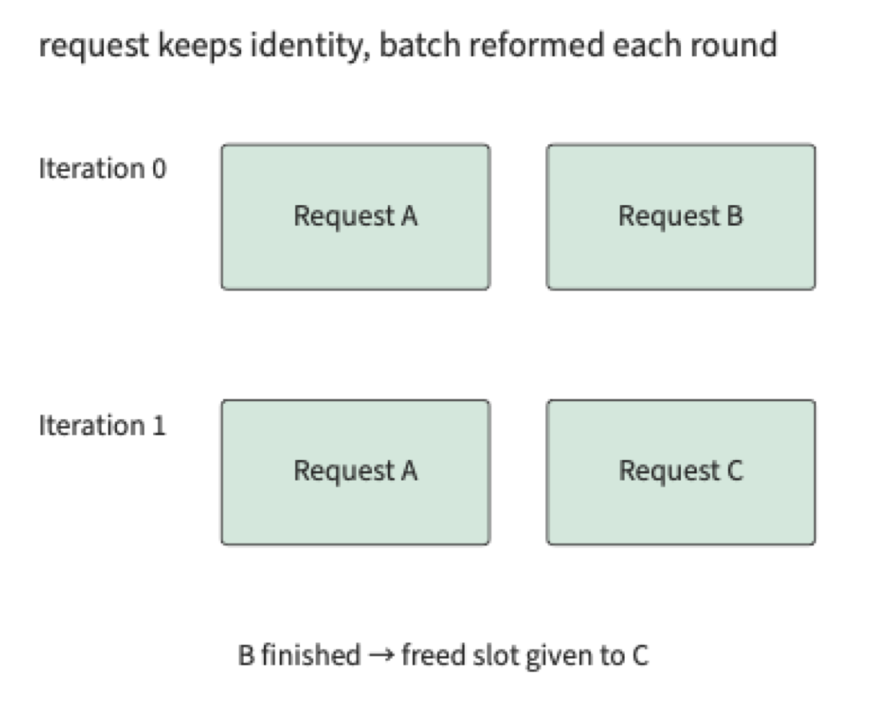
After a request arrives, it first enters a waiting queue. Only after the scheduler adds it to a batch and allocates KV space does the model begin processing the input — the prefill stage. Since the input tokens are all given up front, the model can compute multiple tokens at once and store the keys and values of each layer. Once the last token of the prompt has been computed, the model generates the first output token.
The instance then enters the decode stage. The model takes the just-generated token as the input for the next forward pass, reads the context KV, and generates the next token. A single request must complete these steps sequentially, but the current steps of different requests can be computed together. So even though a single request can only generate tokens one at a time, an instance can still increase total throughput by batching.
On this card, Experiment 8-1 runs a single 2K-input short request alone: prefill and returning the first token takes about 0.096 seconds, after which a token is returned on average every 26.5 ms. Assuming this request first queues for 0.1 seconds, the user receives the first token at 0.196 seconds after arrival. With a total of 256 output tokens, there are 255 output intervals, so the total request time is
This request finishes within 7 seconds. If another short request's prefill is inserted during generation, one output interval must wait an additional roughly 0.096 seconds, stretching from 26.5 ms to about 123 ms, and the total time increases to 7.05 seconds. The computation for each token has not changed at all — merely reordering execution can push a request past its deadline.
Figure 8-2 draws these 6.95 seconds as a timeline. The moment the first token is returned splits the timeline into two segments: everything before it — queueing and input processing — determines when the user sees a response, and the 255 intervals after it determine when the user receives the complete answer. Every subsequent scheduling optimization discussed later can be understood as changing the length of one of these two segments.
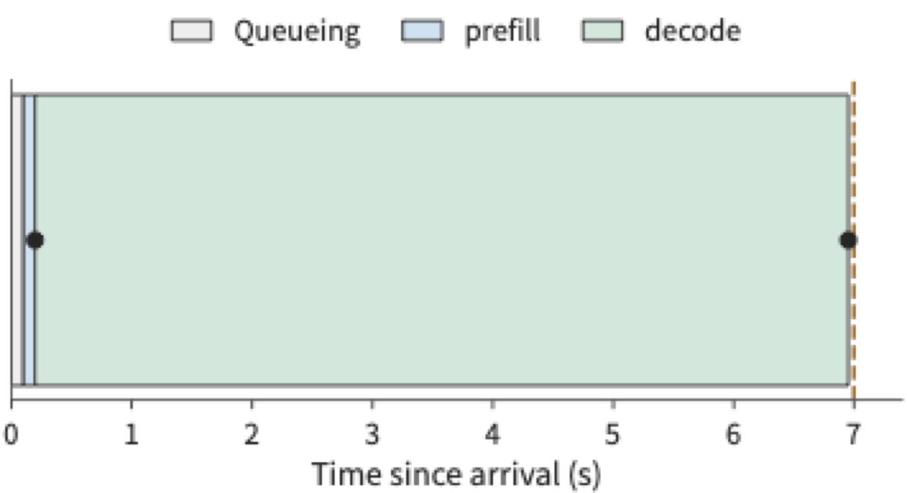
Once a request completes, the scheduler no longer schedules computation for it, and the state manager decides what to do with the KV left behind. KV unique to that request is released when the request ends, while the KV of a shared common prefix can be retained for reuse by later requests, continuing to be managed under the caching policy. Section 8.3 further explains when this cache is shared and when it is released.
8.1.2 Storage Capacity Requirements for Weights, KV, and Runtime Buffers¶
To advance multiple requests along their own timelines, an instance must simultaneously hold weights, request state, and intermediate computation results. This section's example uses a single card, so it lists only the memory footprint on this one card. A multi-card instance must instead list the weight shards, KV, and buffers held on each card separately: idle memory on one card can only be used for computation on another card if the data placement is changed.
Let \(M_w\) denote the capacity of resident weights, \(M_{\mathrm{KV}}\) the total physical KV block capacity after deduplicating shared references (KV is allocated in fixed-size blocks, and blocks shared by multiple requests are counted only once), \(M_a\) the capacity of activations and general workspace, and \(M_u\) the capacity of other buffers such as computation graph replay. The sum of these memory footprints must be less than or equal to the accelerator's available capacity \(C\):
Among these memory footprints, the weights are loaded into memory before any requests arrive, while KV keeps growing as requests arrive and generate output. To determine how many requests an instance can handle simultaneously, we first work out how much KV must be stored per token. Qwen3-8B has 36 layers, 8 KV heads per layer, and a head dimension of 128. Each token must store K and V at every layer, and BF16 uses 2 bytes per element, so the KV capacity required per token is
A 2048-token input occupies 288 MiB of KV; an 8192-token input occupies 1152 MiB. All requests share about 15.3 GiB of weights, but every additional long request with independent context adds 1.125 GiB of KV. Sixteen long requests just to hold their input KV would need 18 GiB, exceeding the reserved 12 GiB.1
KV continues to grow as output is generated. Prefill produces the first output token, after which the preceding 255 output tokens are fed back into the model one at a time to generate the remaining 255 tokens. A short request computes \(2048+255=2303\) tokens in total, and a long request computes \(8192+255=8447\) tokens in total. With 16 tokens per block, they need space allocated to hold 2304 and 8448 tokens, respectively.
| Independent request | KV after prefill | KV allocated after 256 output tokens | Requests that fit in 12 GiB simultaneously |
|---|---|---|---|
| Short conversation | 288 MiB | 324 MiB | 37 |
| Long context | 1152 MiB | 1188 MiB | 10 |
The final column comes from \(\lfloor12288/324\rfloor\) and \(\lfloor12288/1188\rfloor\), respectively. Computing based only on the KV size at the end of prefill, 12 GiB could hold 42 short requests; but once these requests have all generated 256 output tokens, the required space grows to 13,608 MiB. Reserving the space needed for the generation stage at the time a request is admitted avoids discovering a memory shortfall halfway through execution.
Sharing a common prefix can save further memory. The first 6144 tokens of a long request occupy 864 MiB of KV, and the remaining input occupies 288 MiB. If 16 requests each store their own copy of the prefix, 16 identical copies of KV are stored; if they instead reference the same KV, the space saved can be used for each request's own suffix. Section 8.3 will describe the specific block-mapping scheme and calculate the total capacity at the end of generation.
8.1.3 From Single-Request Time to Service Targets¶
We now turn the two segments of the timeline in Section 8.1.1 into metrics against which deadlines can be set. Let \(t_a\) denote the request's arrival time, \(G\) the total number of output tokens, and \(t_1\), \(t_G\) the moments the first and last tokens are returned to the user. Then
and the \(j\)-th output interval is \(\mathrm{ITL}_j=t_{j+1}-t_j\). Adding the time before and after the first output, the complete request time is
In the example in Section 8.1.1, TTFT is 0.196 seconds, and the following 255 output intervals total 6.76 seconds. A shorter TTFT lets the user see a response sooner, uniform output intervals make continuous reading easier, and the total time determines when the complete answer is available. An SLO turns these requirements into deadlines. The opening example of this chapter requires the total time not to exceed 7 seconds; the scheduling examples below will also compare the longest output interval.
These metrics apply to a single request; the instance's overall output also depends on how many requests are processed at once — the batch size (hereafter batch). Throughput is the amount of work completed per unit time. When Experiment 8-1 processes 16 2K requests simultaneously, each decode round takes about 27.44 ms and produces 16 tokens per round, giving a generation throughput of about \(16/0.02744\approx583\) tokens/s; when a single request produces one token every 26.26 ms, this value is only about 38. Either increasing the number of outputs per round or shortening the time per round raises throughput; how long a user actually waits also depends on the queueing time before the request begins execution.
Evaluating service quality also requires checking whether the answer is correct. Fixing the output length makes it easier to compare execution time under identical workloads; letting the model stop naturally instead lets us observe answer correctness, response length, and retry count. Section 8.6 calculates the number of requests completed correctly and on time per unit of time, jointly evaluating speed and quality.
8.2 Batching and Request Scheduling¶
8.2.1 How Weight Reuse Improves Batching Efficiency¶
Consider the matrix multiplication \(Y=XW\), with input matrix \(X\) having \(b\) rows. The same weight element participates in the computation for every row, so processing multiple rows together lets more multiply-adds be completed per weight read. Assuming each weight element is read only once per batch, each multiply-add counts as two operations, and each weight element occupies \(s_w\) bytes. Counting only weight reads, the arithmetic intensity is
For BF16, \(s_w=2\). Increasing the number of requests executing one decode step together from 1 to 16 — each request supplying one new token, with each token's feature vector forming a row of the input matrix — grows the matrix from one row to 16 rows, so the amount of work performed per weight read grows to 16 times its original value. Different requests share the weight matrix, but attention computation must still read each request's own context KV separately.
The precondition for sharing is that this batch of requests uses the same set of weights. Low-rank adaptation (LoRA) relaxes this precondition: it represents a weight adjustment as the product of two small matrices while leaving the base weights unchanged, so different tasks can share one base model and each attach only a small adapter (a trainable parameter module attached to the base model). For the Q and V projections of Qwen3-8B, using a low-rank dimension of 16 and BF16, one adapter occupies 14.6 MiB, and 100 adapters together occupy 1.43 GiB — far smaller than the 14.1 GiB of matrix weights.
If a batch of requests comes from different adapters, all that remains shared is the base weights. The low-rank computation must be grouped by adapter, and each group's row count is the number of requests in this batch belonging to that adapter; the more scattered the adapters, the fewer rows per group, and the worse the weight reuse for this portion of the computation. So how many adapters and how many requests to place in one batch are two separate decisions.
Capacity must likewise be computed separately. 100 adapters occupy 1.43 GiB, while 100 mutually non-sharing 8K contexts occupy 112.5 GiB of KV in total. How many adapters fit is determined by the small matrices, while how many requests can be served simultaneously is still determined by KV; ample headroom in the former does not imply ample headroom in the latter.10
Let \(D_w\) denote the size of the matrix weights that need to be read only once per round, let each request have \(L\) context tokens with no KV sharing between them, and let \(k\) denote the KV capacity per token. The total read volume for one round, and the average read volume attributed to each output token, are respectively
In the per-output-token read volume, the first term is the amortized weight read, and the second is this request's context KV read. Qwen3-8B has \(D_w\) of about 14.1 GiB, and the KV for a 2K context is 0.28125 GiB. As batch grows from 1 to 16, the weight read amortized per output token drops to about 0.88 GiB; as batch grows to 64, it drops further to about 0.22 GiB. At this point, each output token reads more KV than weights.1
Figure 8-3 shows this change. Adjacent ticks on the horizontal axis represent a doubling of batch size, so the weight term halves each time; the KV term stays constant, and the sum of the two gradually approaches the horizontal line for KV alone. At a 2K context, as batch grows from 1 to 64, the read volume per output token drops from about 14.38 GiB to 0.50 GiB — about 1/29 of the original value. Once context length grows to 8K, the KV capacity becomes four times as large, and even after batching, more data must be read per output token.
![Figure 8-3: How batching reduces the read volume required per generated token. The horizontal axis is the number of requests generated simultaneously; the vertical axis is the total bytes read in a batch divided by the number of output tokens in that round. The blue and green solid lines correspond to requests with existing contexts of 2048 and 8192 tokens respectively, including both weight and KV reads; the same-colored horizontal dotted lines show only the KV read volume at that length. The gray dashed line shows the shared weight read volume within a batch divided by the number of requests. The model is Qwen3-8B using BF16; each matrix weight is read once per round, and each request's KV is independent. Both axes use a logarithmic scale.](images/figure-8-2-batch.png)
As batch grows, the savings from amortizing weights gradually diminish. This can be described using the batch at which weight read volume equals KV read volume. The minimum batch at which the total KV read volume reaches or exceeds the shared weight read volume is
Computing with the unrounded weight byte count, the result is 51 for a 2K context and 13 for an 8K context. As context length grows fourfold, KV reads exceed weight reads at a much smaller batch. At the same time, a larger batch also requires more memory: 64 2K requests, together with the weights and the KV after one decode step, occupy about 35.7 GB in total. Batching reduces the read volume per output token, but increases the amount of data resident at once.
We now estimate the time required for these reads. Let \(F\) denote the computation for one request, \(P\) the number of operations the accelerator completes per second, and \(\beta\) the memory bandwidth. Computing the time required for computation and for reading separately, and taking the larger of the two to estimate the time for one round:
Setting the two terms equal and rearranging gives \(b(F/P-Lk/\beta)=D_w/\beta\). Each additional request adds \(F/P\) to computation time and \(Lk/\beta\) to KV read time. When the former is larger, computation time grows with batch size until it catches up to read time; otherwise, reading remains the more time-consuming term throughout. The values 51 and 13 above compare the volumes of two kinds of data read; this equation instead compares how computation and memory bandwidth each bound execution time.
Both terms are computed using peak compute and peak bandwidth respectively, giving the physical lower bound for this card under these conditions. The ratio of this lower bound to the measured time for one round is exactly the MFU and MBU defined in Section 1.2.2; Section 8.6.3 will use per-round records to calibrate these two ratios, then apply them to the rest of this chapter's examples.
Translating this into request time also requires checking whether a larger batch delays the first token, and whether the gap between successive outputs grows longer. The batch-sweep experiment records both of these changes simultaneously. For Qwen3-8B with a 2K input and 256-token output, as batch grows from 1 to 64, total throughput grows from about 37 to 1165 tokens/s; but the time to return the first token is delayed from about 96 ms to 3.29 seconds, and the average output interval grows from about 27 to 40 ms. Although each round produces more output, processing more input and running a larger batch also take more time. In this experiment, each batch of requests arrived together; an online service that additionally waits to fill a batch would add this waiting time to the first-token latency as well.3
Exercise 8-1 · Calculation: How does read volume change as batch grows? Take \(D_w=15,136,811,008\) bytes and \(k=144\) KiB, and calculate the per-output-token read volume for 2K and 8K contexts at batch sizes 1, 4, 16, and 64. For each context length, find the smallest integer batch at which KV read volume first reaches or exceeds the amortized weight read volume. Then, using 12 GiB of available KV memory, 16 tokens per block, and 256 output tokens, find the maximum number of independent requests that can be accommodated for each context length. Compare this maximum request count against the batch size at which the two read volumes become equal, and determine whether the capacity constraint would prevent the batch from growing that large in the first place.
If the weights were instead served from a sufficiently fast independent storage, read time would drop, and the benefit of batching would need to be recalculated. Following the 8K example from Chapter 4, let \(W\) be the number of weight bytes read in the whole batch, \(B\) the number of requests in the batch, and \(K\) the number of KV bytes read per request in this step. In the conventional scheme, the HBM read volume amortized per output token is \(W/B+K\); when weights are served from a sufficiently fast independent ROM, HBM must still read \(K\) per output token.30 In Figure 8-4, the gap between the two curves narrows as batch grows, showing that the benefit previously gained by using batch size to dilute weight reads is disappearing.
However, batch size still affects how well matrix computation utilizes compute units, as well as the KV read volume within the batch. Substituting the new read volume into the time model above lets us find the crossover point between computation and KV reads, and then choose a batch size based on first-token latency and output interval.
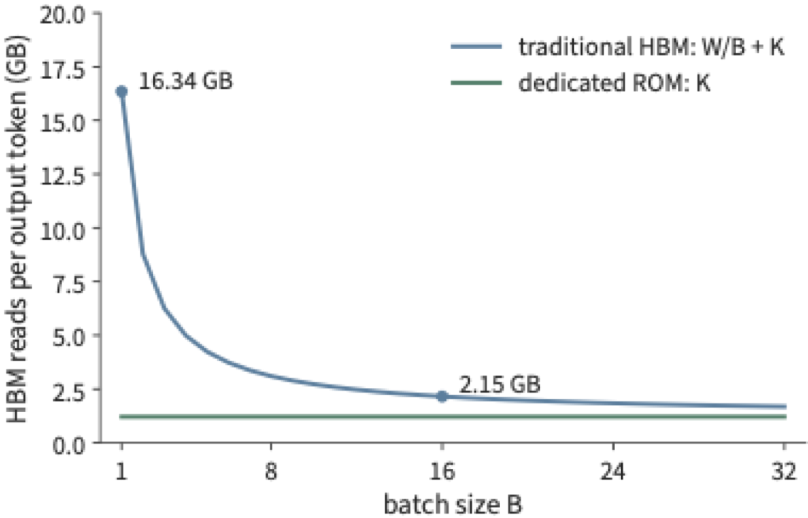
8.2.2 From Fixed Batch to Continuous Batching¶
Two requests begin generating at the same time; one needs eight tokens, the other only two. Once the short request finishes, the long request still has six steps to go. If we insist on waiting for both requests to finish before starting the next group, the execution slot freed by the short request sits idle the whole time. Fixed batching admits and finishes a whole group together; continuous batching instead reorganizes active requests at each iteration boundary, admitting new requests as soon as a slot opens up.
The batch analysis in Section 8.2.1 assumed that \(b\) requests participate in computation each round, but in practice the row count changes as requests finish and new ones are admitted. The execution slot in Figure 8-1 corresponds to one row of computation here, a different resource from the communication request slots recorded in Chapter 7. Whether new requests can be admitted promptly determines how many rows can participate in computation in the next round.
Admitting new requests sooner also means their input computation occupies the accelerator sooner. If a new request carries a long prompt, its prefill lengthens the wait between two decode steps of existing requests. The scheduler must therefore divide accelerator time between two things: processing new requests' input, and letting existing requests continue generating.4
Example: why does continuous batching shorten total time yet lengthen output intervals? At most two requests run at once. r0 and r1 arrive at time zero, each with a 2048-token input, outputting 8 and 2 tokens respectively; r2 arrives at 20 ms with an 8192-token input and outputs 2 tokens; r3 arrives at 30 ms with a 2048-token input and outputs 4 tokens. The time per round is fit from the batch-1 measurements in Experiment 8-1: a fixed 26.22 ms, plus 30.4 μs per new token, plus 3 ns per query-key pair satisfying the causal relationship. These parameters reproduce the measured 26.26 ms for one decode round and 94.8 ms for prefill when a 2K request runs alone. The fixed component is the part of a round independent of token count, including reading the full set of weights (about 8.4 ms at the peak bandwidth of 1792 GB/s) and per-kernel submission overhead.5
Fixed batching makes r2 and r3 wait for the entire r0/r1 group to finish, giving a total time of about 870 ms. Continuous batching admits r2 as soon as r1 finishes, dropping the total time to about 766 ms; but r0's next output must then wait for r2's 8K prefill, and the maximum output interval grows from about 26 ms to 376 ms. Total time is reduced by about 12%, while one output stall grows to 14 times its original length.
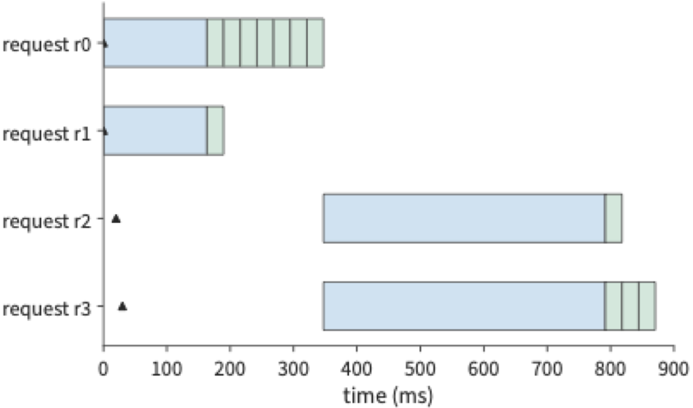
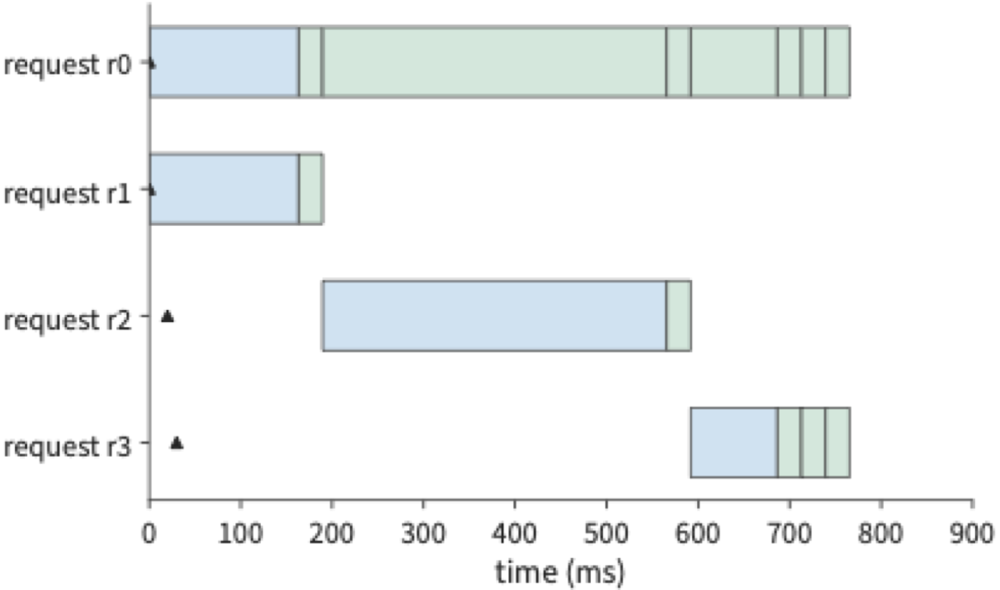
Taking this further, splitting r2's prefill into chunks of 2048 tokens each, processing at most 4096 tokens per round (the same setting as in Experiment 8-1), and letting existing requests continue decoding before each chunk of new input is processed, the maximum output interval drops to about 133 ms, and all requests finish in a total of about 844 ms. After chunking, the scheduler can more frequently let existing requests continue generating, making the output intervals more even.
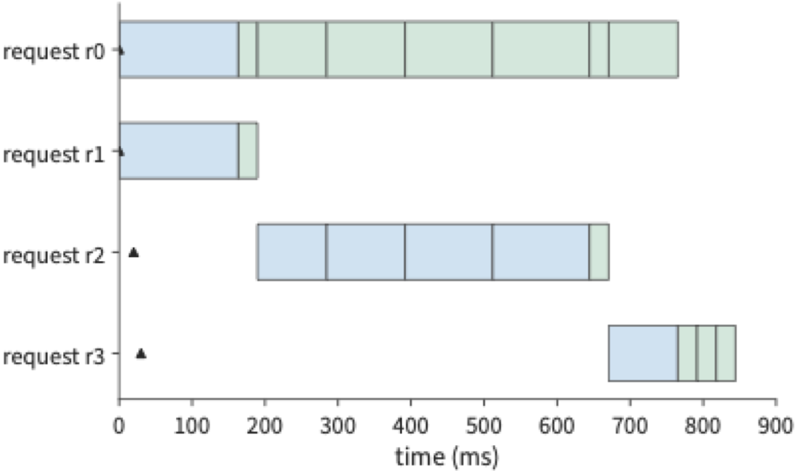
8.2.3 The interference of long prefills with generation, and chunked execution¶
The larger the prefill block processed at once, the fewer rounds of input processing a new request needs; the smaller the block, the sooner already-running requests get their next chance to execute. Schedulers typically first schedule requests that are decoding, then use whatever remains of this round's token budget to process prefill. Long inputs are thereby spread across computation in multiple output intervals.
Even with a fixed block length, the attention workload still grows with context length. Let the current block contain \(c\) new tokens, with an existing context length of \(h\). The first new token attends to \(h+1\) tokens, the second to \(h+2\), and the last to \(h+c\). Summing these pairs term by term:
The \(ch\) term comes from new tokens accessing the old context, and the triangular term comes from causal attention within the block. Taking \(c=512\): the first block's 131,328 pairs come entirely from within the block; the last block of an 8K input already has 7680 context tokens, and its pair count rises to 4,063,488 — about 31 times that of the first block.
Figure 8-8 depicts the pair count as area: each new token must access the entire old context, forming the rectangle on the left; within the block, a token can only attend to positions at or before its own, forming the triangle on the right. With a fixed block length, the triangle on the right stays constant, while the rectangle on the left widens as the context grows. This is why the last block requires more attention computation.
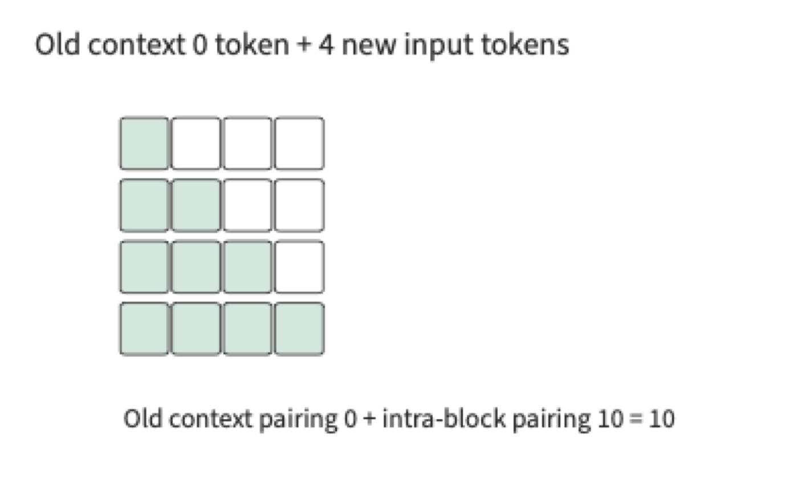
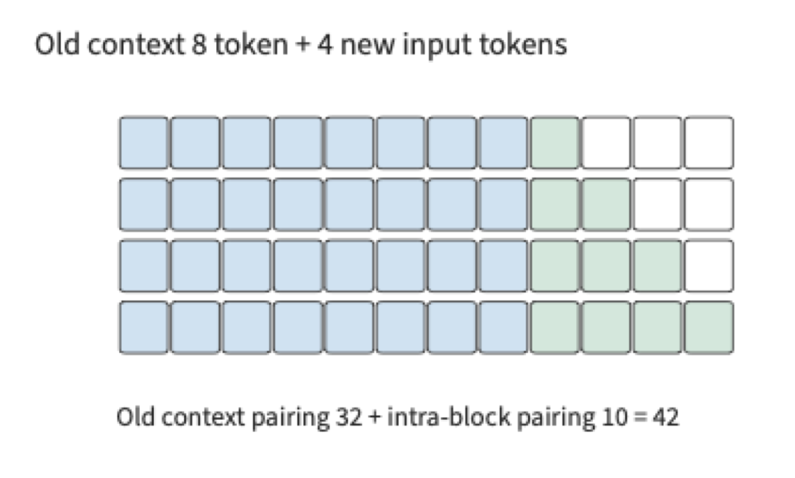
The model must also run projections and the FFN; this per-token feature transformation processes 512 new tokens per block, so its workload is roughly constant. In the per-block records already collected, the last block's model-backbone matrix computation is about 32% greater than the first block's, with median execution time rising from about 25.3 ms to 35.1 ms — an increase of about 39%. The overall block execution time is therefore jointly determined by two parts: one that varies mainly with the number of new tokens, and another that also grows with the existing context length.6
Context growth explains why blocks of the same size get progressively slower; shrinking the block length brings a different kind of overhead. Splitting a 256-token block into two 128-token blocks doubles the scheduling opportunities and halves the matrix row count, but each smaller block still has to use the same set of weights. Take a layer's FFN weights of 288 MiB as an example: if two executions each read them from GPU memory separately, this portion of reads rises from 288 to 576 MiB. Smaller blocks give already-running requests earlier execution opportunities, but also increase the number of executions; the scheduler should choose the largest block that still satisfies the output-interval requirement, so as to minimize extra launches and reads.7
8.2.4 Token budget, dynamic shape, and execution time¶
Schedulers typically set an upper limit on the number of tokens processed per round, called the token budget; the 4096 tokens processed per round at most in the chunking example of Section 8.2.2 is one instance of this. Actual execution, however, must assemble the feature vectors of these tokens into a matrix and select a kernel or a pre-captured CUDA Graph (Section 5.5.2). The matrix actually executed may be larger than what this round strictly needs, so processing one fewer token does not necessarily mean doing less computation.
For example, suppose graphs are pre-captured for 16 rows and 32 rows, and inputs of 17 to 32 rows are all padded to 32 rows. Reducing the workload from 18 rows to 17 rows still executes the 32-row graph; only reducing further from 17 rows to 16 rows lets the smaller graph be used. Capturing a separate graph for 17 rows would eliminate the 15-row padding, but capturing that graph requires preparation time, and the buffer used for replay must also be held in memory long-term. Thus, when choosing the preset shapes for CUDA Graphs, the runtime memory overhead from Section 8.1 must also be factored in.
Execution shape determines how long a round takes, while the token limit determines how much work this round assigns to new requests. Raising the limit lets long inputs finish processing sooner, but already-running requests must wait until this round ends before they can continue producing output. In a replay recording of six requests, requests arrive every 80 ms. As the per-round token limit rises from 512 to 8192, the queueing time in the engine for later-arriving requests drops from about 149 ms to under 0.1 ms, while the longest output interval instead rises from about 32 ms to 183 ms. The higher the limit, the more input a round completes, the sooner new requests leave the queue — and the longer already-running requests wait for their next output.8
Deciding how many tokens to process per round can therefore be done in two steps. First determine how long a round is allowed to run based on the permitted output interval, then combine this with the context length and the preset execution shape to convert that into a number of new tokens that can be processed. Within the same amount of time, requests with longer contexts can process fewer new tokens, while requests with shorter contexts can use larger blocks. Once the execution schedule is decided, KV space must still be allocated for these requests; the next section discusses how to allocate and reuse this memory.
Exercise 8-2 · Core · Analysis: determining prefill block size from output-interval constraints. Using the four requests and execution-time model from Section 8.2.2, compute by hand how long r0's and r1's initial prefill and next decode step each take, then compute the duration of the round in which continuous batching admits r2. Explain the source of the longest output interval. With the new block length fixed at \(c=512\), compute the attention pair count for existing context lengths \(h=0\) and \(h=7680\) respectively. Finally, analyze the accompanying six-request replay recording, choosing a per-round token limit under each of the two goals "longest interval under 50 ms" and "admit later-arriving requests as soon as possible," and identify which time cost determines each choice.
8.3 Allocation, reuse, and release of the KV cache¶
8.3.1 Reservation, fragmentation, and paged allocation¶
Section 8.1 reserved space for each request based on the maximum output length, guaranteeing it can keep generating. If a request ends early, the tail of its reserved space goes unused for good. An alternative is to expand memory incrementally as generation proceeds, but if the space must stay contiguous, adjacent regions occupied by other requests then require moving data or waiting.
This kind of allocation can be likened to a loose-leaf binder: reading order is fixed by page numbers, but the pages need not sit in adjacent physical positions — one only needs to remember where each page is. As a sequence grows, a new page can be placed in any free slot with its location recorded, avoiding the need to shift the whole binder just to keep pages contiguous.
Paged allocation divides a sequence into fixed-size blocks. A logical block is numbered by position within the sequence, analogous to a page number; a physical block is the actual memory region holding KV; a per-request block table records which physical block each logical block maps to. When a sequence grows enough to need a new block, the engine allocates a physical block from the free pool and adds the mapping. Attention computation looks up the block table to find the KV at the needed position, so physical blocks can be scattered in memory. What's discussed here is block-based addressing of KV within memory; the swap-in and swap-out between levels of the memory hierarchy is left to Sections 8.3.4 and 8.4.3.
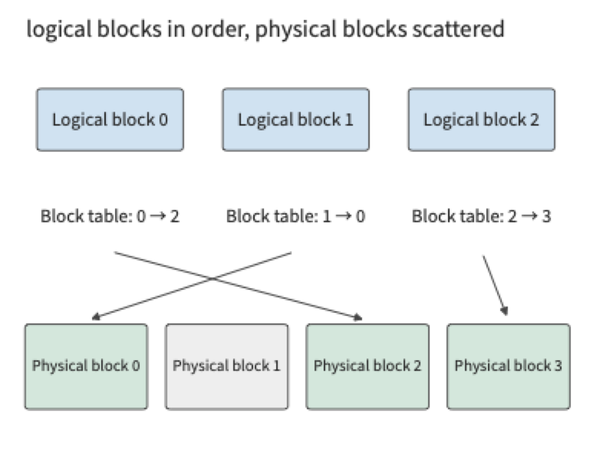
Let each block hold the KV for \(p\) tokens, and let the current length be \(L\); then \(\lceil L/p\rceil\) blocks are needed. Only the last block has unused KV slots at its tail, wasting
at most \(p-1\) tokens' worth of KV space. The smaller the block, the lower this upper bound, but the more block-table entries and allocation operations there are. In 2023, researchers at Berkeley and other institutions proposed PagedAttention in vLLM, applying the idea of OS-style paged memory management to the KV cache, reducing the constraint that reserved space and memory fragmentation place on serving concurrency. PagedAttention brings this mapping into attention execution itself; FlashAttention, by contrast, organizes block-wise computation and intermediate results inside the operator — the two act on state allocation and on compute-memory access, respectively.
Worked example: how much reserved space can KV paged allocation save? Let A, B, C, D currently have lengths 9, 13, 5, 15, with each allowed a maximum of 16 tokens. With full-span reservation, the four requests together reserve KV space for 64 tokens; with \(p=4\) paging, they are allocated 12, 16, 8, 16 respectively, for a combined KV space of 52 tokens. Of this, the KV actually stored still corresponds to 42 tokens, so unused capacity drops from 22 tokens to 10 tokens.
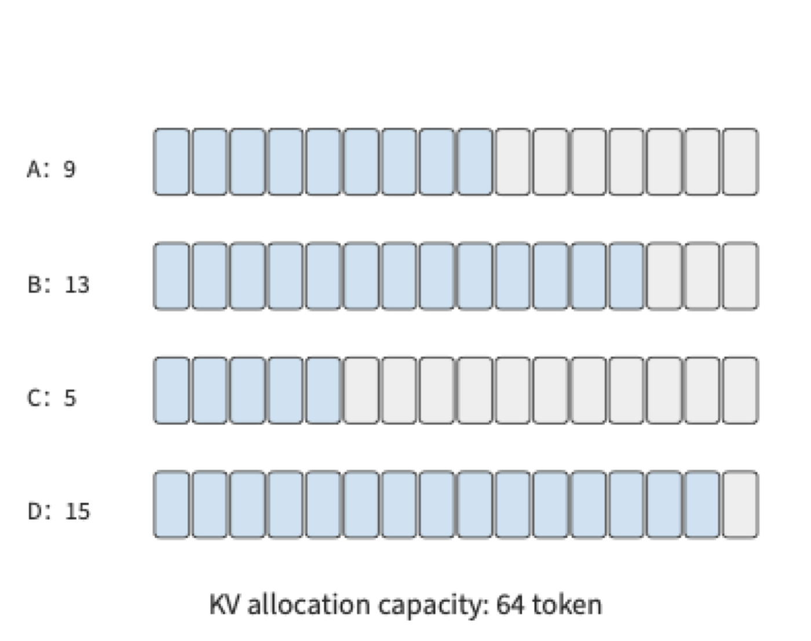
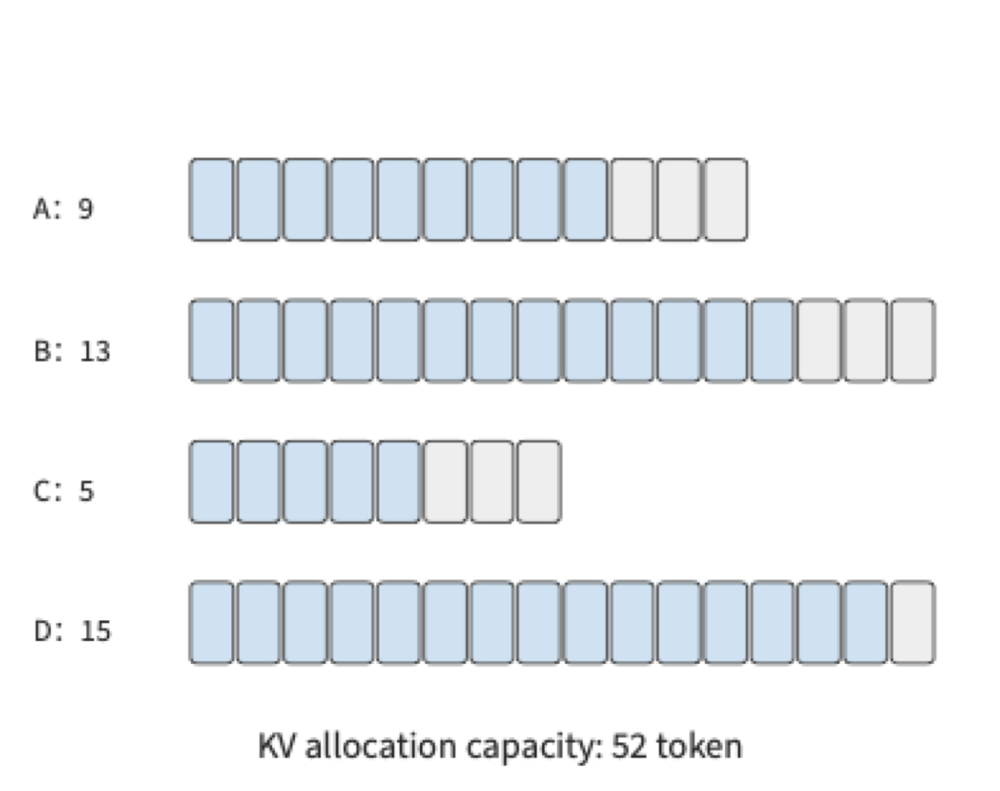
If A and B's first eight tokens are identical, they can further share two full blocks, reducing the total allocation to 44 tokens. Paging reduces reserved-but-unused space; sharing eliminates duplicated storage of context — the two save memory in different parts.
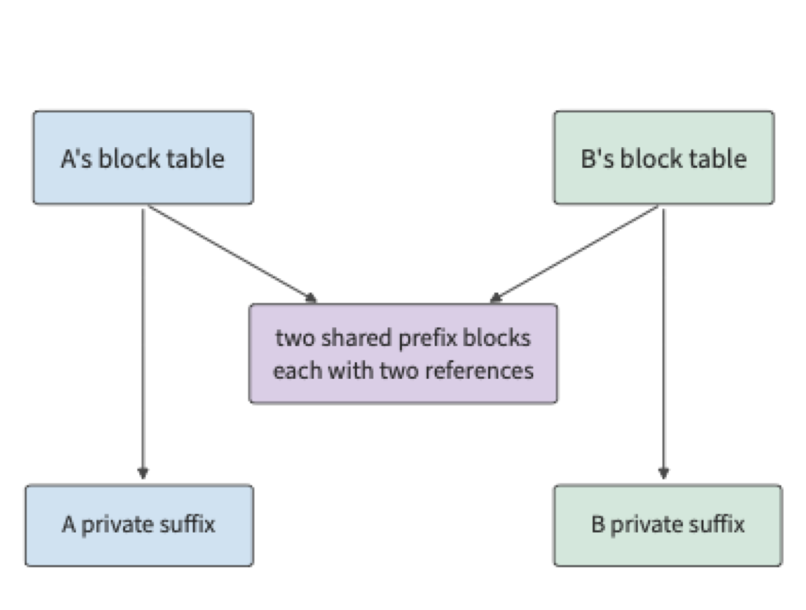
8.3.2 Branch sharing, copy-on-write, and memory release¶
In the prefix-sharing figure, B and A reference the same two physical blocks. If A finishes first, those two blocks must still be kept for B; if B needs to modify their contents, it must not affect A. Implementing sharing thus requires determining when to release shared blocks, and how to prevent different requests from overwriting each other's data. Each entry in a block table that points to a physical block is called a reference; a shared block is referenced by multiple block tables. A reference count records how many users still need it. Each time a request acquires a reference, the count increases by one; when the request ends, it releases the reference. Only after the last reference is released can the block return to the free pool — and even then, one must confirm that accelerator operations no longer access it. In this way, the same shared context can serve multiple branches at once, and continue serving the remaining branches after one branch ends.
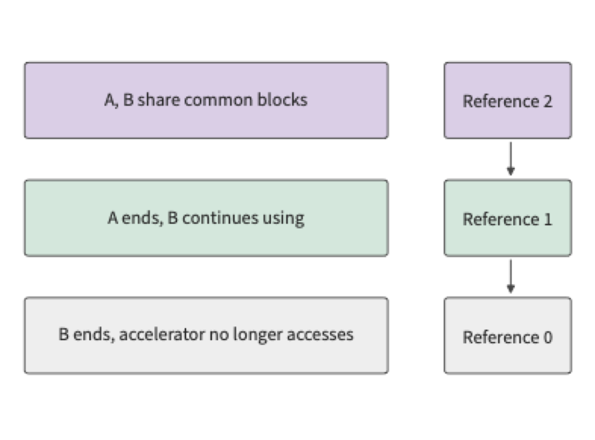
Writing to a shared tail block requires obtaining an independent copy. For example, suppose a block that can hold 4 tokens already has the KV of three shared tokens written into it, and two branches are about to write different tokens next. Writing directly into the original block would make the two branches contend for the block's fourth slot. Copy-on-write is the mechanism of obtaining a private copy before modifying shared content. Here the three tokens are copied first, and the two branches each append separately; the already-full read-only block continues to be shared. As branches grow, the common prefix stays as a single copy, while each branch stores only its own newly added suffix.
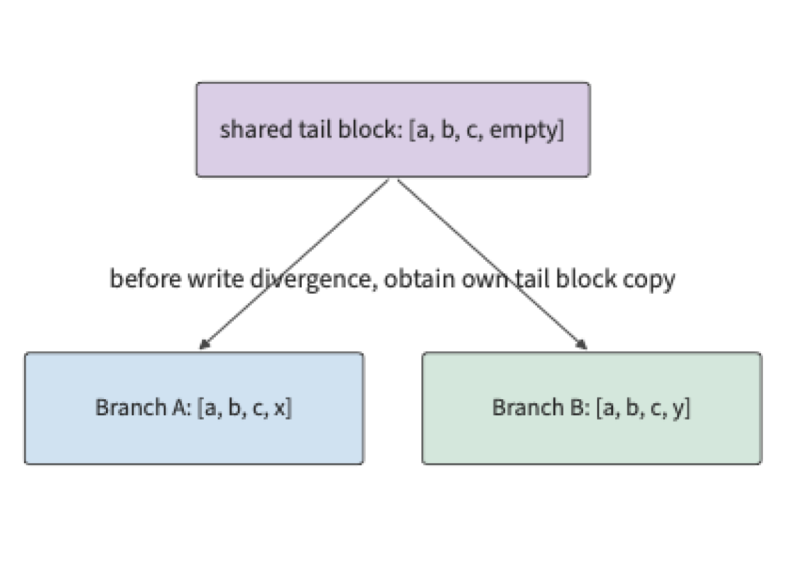
In an existing four-branch experiment, the common prefix occupies 95 blocks, and each branch has an additional 9 private blocks. The four block tables together hold \(4(95+9)=416\) references, but the actual number of physical blocks is only
Independent storage would need 416 blocks; sharing cuts this by about 69%. This saving comes from deduplicating the common prefix; the 36 private tail blocks still grow with the number of branches.9
The serving system knows which tokens belong to the common prefix and which will be written independently after branching, so it can translate the model's reuse relationships directly into physical block sharing. The block table handles address mapping, the prefix relationship determines the sharing scope, and private copies are created only when a branch writes. What was originally reserved independently per whole request is thereby reallocated based on the state actually produced and reused.
Batch-wide KV capacity after common-prefix sharing. 16 long requests share the first 6144 input tokens, whose KV occupies 864 MiB in total. Each request's private portion contains \(8192-6144+255=2303\) tokens. Allocating at 16 tokens per block requires room for 2304 tokens, i.e., 324 MiB. So the KV space needed once this group of requests finishes generating is
This group of requests originally needed \(16\times1188=19008\) MiB; after sharing, it is about 5.91 GiB, which fits within the reserved 12 GiB of memory. In general, \(b\) similar long requests occupy \(864+324b\) MiB, so the capacity ceiling rises from 10 independent requests to 35 shared requests.
Once a block is finished with, it must still be released correctly before being handed to a subsequent request. Releasing memory requires satisfying two conditions at once: no user still holds a reference, and already-submitted accelerator operations no longer access the block. After a user cancels a request, the scheduler stops scheduling new computation for it, waits for already-submitted operations to finish, and only then releases its private blocks. In one observation, the cancellation call returned in about 1.6 ms, while the corresponding 104 blocks were not released until about 31 ms. Later requests that use these blocks only after release will not overwrite data an old request is still reading.29
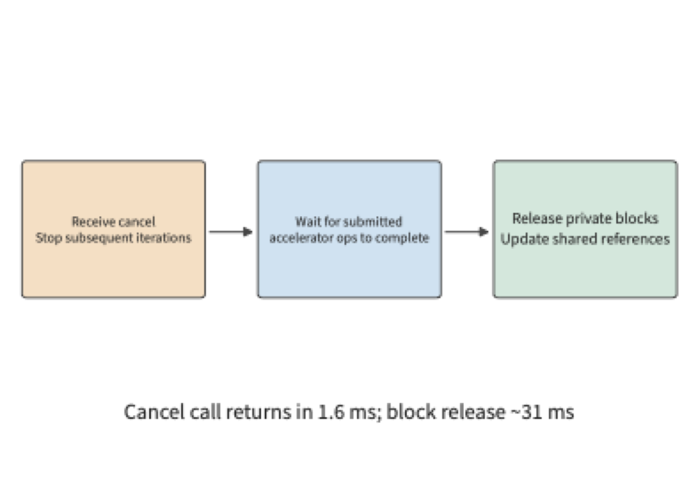
Besides normal release when a request ends or is cancelled, the engine can also preempt a request when memory is short: pausing the request and releasing its KV, then later recomputing its state from the saved input and output. In the same experiment, one preemption occurred when using a 1 GiB KV pool, scheduling 1805 more tokens than normal execution; with a 2 GiB pool, this recomputation did not occur. Preemption temporarily frees memory for other requests, at the cost of repeated computation when execution resumes.9
Exercise 8-3 · Computation: how KV block size and prefix sharing affect capacity. Page four sequences of length 9, 13, 5, and 15 into blocks of 2, 4, and 8 tokens respectively; compute the number of unused KV slots in each sequence's tail block, and find the total unused KV slots and total block-table entries in each case. Then, using the chapter-opening example, compute the full capacity for 8, 16, and 32 long requests under both independent and shared conditions. Keeping each request's total length fixed, convert one originally private full block into part of the common prefix, and find how many fewer physical blocks \(b\) requests need to allocate in total.
8.3.3 Prefix reuse across conversations and agent tasks¶
Section 8.3.2 covered how concurrently running requests share physical blocks. This sharing can also span across the end of a request: the prefix KV left behind by an old request can save a later request from recomputing the same span of input. If a subsequent request's prefix is exactly identical, and uses the same model, positional-encoding rule, adapter, and state format, it can use the cached KV directly and continue prefill from the end of the prefix. The chapter-opening example's common prefix of 6144 tokens means that once the cache is hit, each long request only needs to process the remaining 2048 input tokens before beginning generation.
This kind of reuse happens continuously along the prefix. Suppose two prompts share their first 100 tokens but differ at the 101st — even if the text afterward matches again, the context each depends on from the 101st token onward is already different. Placing a dynamic timestamp at the very start of the prompt causes the longer, shared tool definitions that follow to lose their reuse opportunity; placing the stable system prompt and tool definitions first, and appending this round's variation afterward, preserves a longer common prefix.11
A prefix tree expresses this structure directly: the path from root to a branch point is shared context, and the path from the branch point to a leaf is the private suffix. In Figure 8-17, the first four rounds of input first share 206 tokens, and the next three rounds continue extending along the same path. Edges in the tree are labeled by the number of new tokens, and leaves give the full input length.
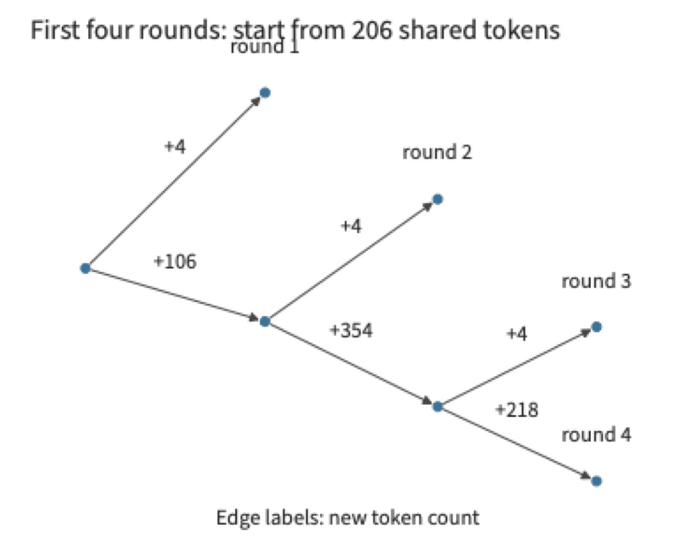
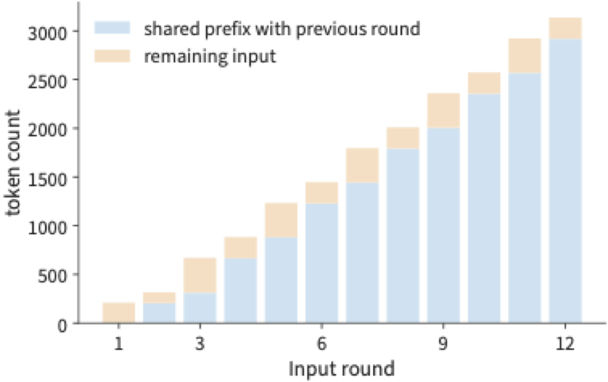
Appending content at the end each round preserves the existing common prefix, but the longer the context, the greater the KV footprint and the subsequent read volume.
Extension: how a hybrid attention model determines the recoverable prefix position. Full attention retains per-token KV, while recurrent models typically retain only the current state. Suppose the text matches up to the 10,752nd token, and recurrent snapshots are saved at the 4096th and 8192nd tokens respectively; the system restores from 8192 and then computes forward to 10,752, recomputing 2560 tokens. Adding more snapshots reduces the number of tokens to recompute, but requires storing more state. Taking KDA from Chapter 2 as an example, one implementation splits the within-layer tensor across eight cards (TP=8); in this case, each snapshot is about 53.6 MiB per card, so keeping 2 snapshots costs about 107 MiB, and keeping 32 snapshots costs about 1714 MiB. The denser the snapshots, the fewer tokens need recomputing on restore, but the more state must be retained.12
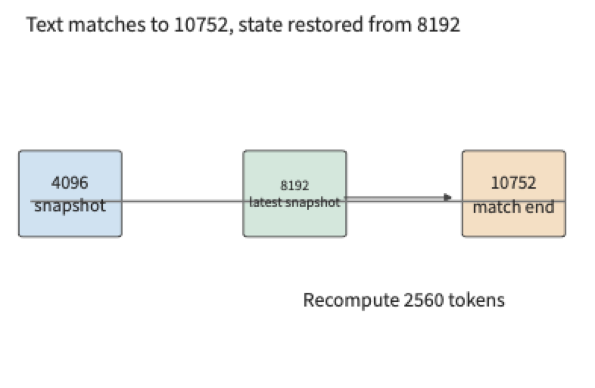
Context organization can also actively change reuse opportunities. Suppose there is already an 8K-token context, and the next round appends a 1K tool result; at most the original 8K prefix can be reused, requiring only the new portion to be processed. If instead the leading instructions are rewritten, the following content — even if textually identical — can no longer be reused. Another approach is to summarize the history down to 2K and then append 1K. Replacing the original history with a summary means subsequent computation uses a shorter context, but incurs the extra cost of one summarization and rebuild pass. Organizing context therefore requires weighing memory footprint, recomputation time, and subsequent read volume together.
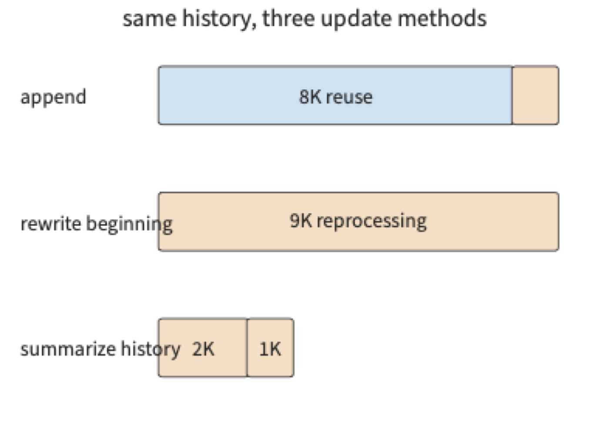
Prefix reuse on the model side also involves finer distinctions in state. DeepSeek V4.1 handles two kinds of local state separately when reusing prefixes. The CED structure introduced in Chapter 2 comprises a causal encoder and decoder, each with its own SWA local state: encoder SWA can be retained short-term in a host DRAM pool, to continue processing new input along the existing prefix in the next round; decoder SWA is used only for this round's subsequent generation, and the deployment described in the paper does not save it as part of the prefix cache. Global KV, by contrast, goes into a cache that can be reused over a longer term. Consequently, the 40 layers of SWA resident during generation and the prefix cache retained across rounds require separate capacity accounting.31
Whether these two kinds of state are hit determines how much prefix the encoder needs to restore when continuing computation in the next round. Suppose that once the tool returns, the tokens or input representations needed for restoration are still available, and the model version, token position index, and input remain consistent. When both the global KV and encoder SWA are hit, the encoder processes the appended input directly; when only the global KV is hit, the encoder replays up to the most recent 128 tokens of the cached prefix and executes them together with the uncached suffix. The replay segment rebuilds the encoder SWA and continues using the existing global KV; the newly added suffix produces new global KV and SWA. When the global KV is also not hit, the missing prefix is recomputed from scratch.
After that, every prefill shares one common step: taking the encoder output for the last up-to-128 tokens of the complete prompt, passing it through the 20 decoder layers to approximately reconstruct the decoder SWA, preparing local state for the first decode step. So when the encoder cache is fully hit, encoder prefix restoration can be skipped, but the decoder still needs to perform the window replay.
The state obtained from short-window replay is an approximately restored state, with error arising from earlier local dependencies being truncated. Although each layer accesses only the most recent 128 tokens, stacking multiple layers still lets local state indirectly depend on earlier input through the previous layer. Re-executing from the window boundary changes this portion of the historical information. Section 3.2.2 of the technical report therefore defines the state rebuilt by the encoder as an approximate state; this state in turn feeds into subsequent computation, making the global KV and SWA of the newly added suffix depend on the restoration starting point.
The distinction between the two kinds of state ultimately shows up in cache capacity. Under the workload and caching policy adopted in the DeepSeek V4 technical report, SWA accounts for about half of the long-term cache. V4.1 moves this portion out of the persistent cache, and further compresses the global KV to about a quarter, so long-term storage volume becomes about \(1/2\times1/4=1/8\) of the original. The short-term-retained encoder SWA sits in DRAM, while the decoder SWA stays resident on the accelerator only during that round's generation. Caching data by usage duration in tiers further lowers the long-term capacity requirement.
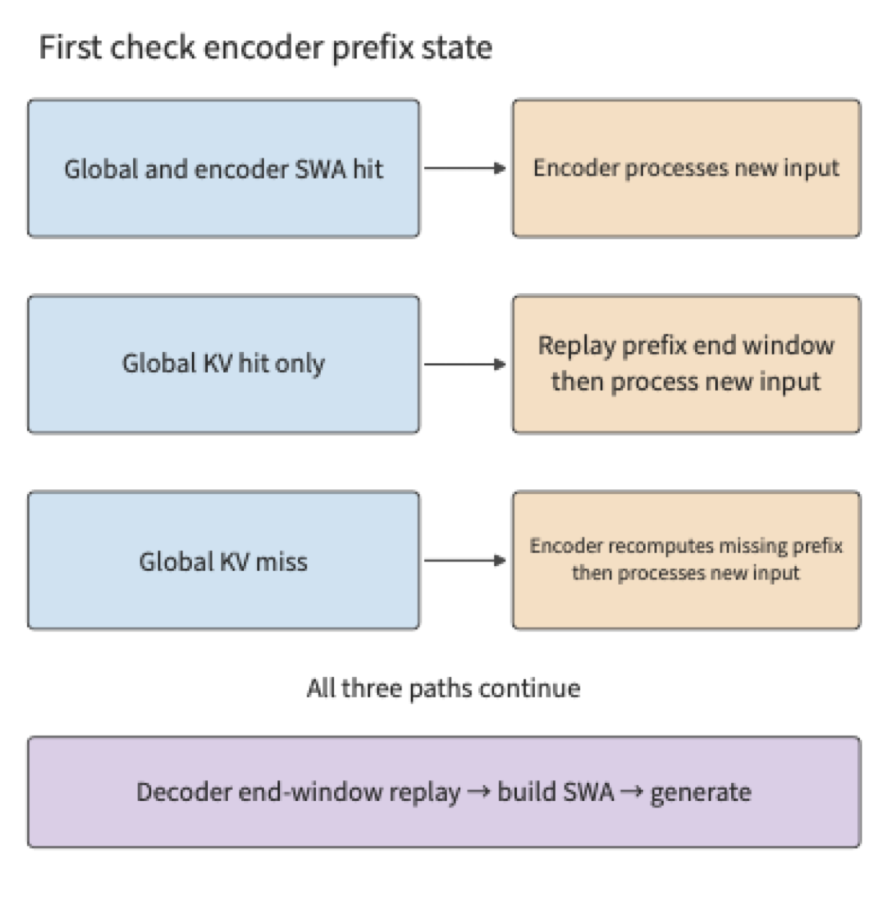
8.3.4 Cache Admission, Eviction, Swap-Out, and Recomputation¶
Retaining a prefix after a request finishes exists to save recomputation the next time it is used. Let \(p_h\) be the probability that the prefix is reused, \(T_r\) the recomputation time, \(T_f\) the time to fetch the state back from cache and prepare it, and \(T_m\) the time required to maintain the cache. Each hit saves \(T_r-T_f\); multiplying by the hit probability and subtracting the maintenance time gives the expected net saving:
Take the 6144-token common prefix from the long request at the start of the chapter as an example: its KV occupies 864 MiB (0.906 GB). Recomputing this prefix on an RTX PRO 6000 requires 96.5 TFLOP of matrix operations; at 62% of the BF16 peak reached by batch-1 prefill in Experiment 8-1 (Section 8.6.3), this takes about 307.9 ms. After swapping this prefix out to host memory, fetching it back over this card's PCIe Gen5 x16 link (64 GB/s per direction) takes about 14.2 ms;28 taking the maintenance overhead as a single transfer writing back to the host during swap-out gives the same 14.2 ms. At a 50% hit probability, the average saving is 132.7 ms. For retaining the prefix to save time, we need
If the host link is switched to PCIe Gen4 x16 (32 GB/s per direction), fetch and swap-out each rise to 28.3 ms, and each hit saves only 279.6 ms, raising the required minimum hit probability to 10.1%. Swap-out frees accelerator space, but only when the prefix is used frequently enough does it offset the time needed for fetching and maintenance.
That a prefix is worth retaining does not mean it should be retained preferentially. When space is tight, a large prefix occupies room that could otherwise hold several smaller prefixes. Let A be the 6144-token prefix above; each B-class prefix contains 2048 tokens and occupies 288 MiB. Also computed with PCIe Gen5 fetch and swap-out, recomputation takes 94.7 ms, fetch and maintenance each take 4.7 ms, and with the same 50% hit probability, the expected saving is 40.3 ms. Figure 8-22 places both in a cache of the same size: keeping one A saves 132.7 ms, while keeping three B's saves a combined 120.9 ms. Recomputation time grows superlinearly with prefix length — prefill for 6144 tokens is 3.25 times that for 2048 tokens — so the same block of memory yields a higher return when used to retain a long prefix.
This comparison can also be converted into a saving per unit of capacity: A saves about 0.154 ms per MiB, B about 0.140 ms. Sorting by this figure lets us compare prefixes of different sizes.
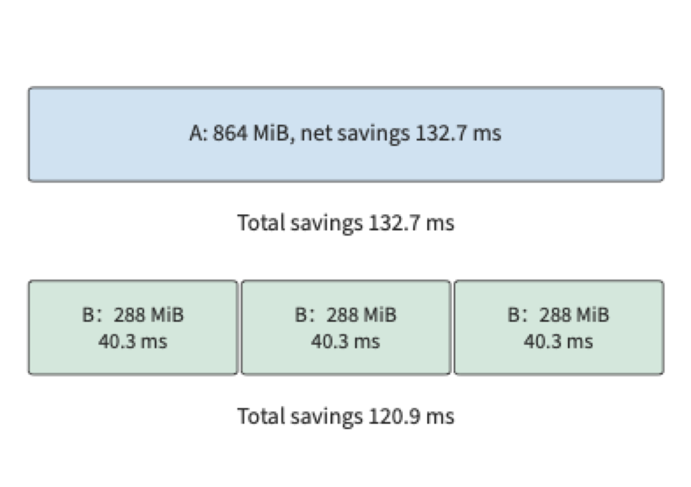
The choice above assumes one precondition: the prefix must remain until it is used again. When cache capacity is insufficient, even if the next round's input retains the same prefix, it may have to be recomputed because the state was already evicted. One replay of 12 rounds of agent input contains 19,556 input tokens. Under the same interfering requests, a 6 GiB cache pool hits 16,304 tokens, requiring only 3,252 to be reprocessed; a 1 GiB pool has no hits, requiring the entire input to be reprocessed. Increasing the wait time between adjacent rounds by 0.2 seconds did not change the hit count. In this comparison, increasing capacity retained the reusable prefix, whereas simply delaying the next round's request produced no comparable effect.13
Cache admission determines whether a request's prefix is retained after the request finishes; the eviction policy determines which prefix to delete first when space runs short; the swap-out policy determines which storage tier to move state to; the recomputation policy determines how many input tokens to re-execute. For the 16 long requests at the start of the chapter, retaining a single shared prefix requires only 864 MiB, yet it saves both duplicate storage and prefill computation for subsequent requests.
Exercise 8-4 · Core · Analysis: which prefixes should a limited cache retain to save the most time? Available cache space is 864 MiB. Prefix A contains 6144 tokens and occupies 864 MiB; three mutually independent B-class prefixes each contain 2048 tokens and occupy 288 MiB. On an RTX PRO 6000, compute recomputation time from the matrix operation count at 62% of the BF16 peak of 503.8 TFLOP/s, compute fetch time at 64 GB/s per direction over PCIe Gen5 x16, and take maintenance time as one swap-out, equal to the fetch time; hit probability is 50% in both cases. Compare the expected net saving from retaining one A prefix versus three B-class prefixes. Keeping the B-class hit probability fixed, find the threshold hit probability for A below which three B's should be retained instead. Then switch the link to PCIe Gen4 x16 (32 GB/s per direction) and redo the comparison. For the data-analysis portion, read the accompanying 12-round input and cache replay, compute the common-prefix ratio and the actual hit ratio separately, and explain why other requests occupying cache space affects the actual hit ratio.
8.4 Compression and Offloading¶
8.4.1 Memory Footprint After Weight Quantization¶
Prefix sharing saves space by removing duplicate KV. Even when requests share no common prefix, quantization can still reduce the storage required for weights and KV. Quantization typically encodes values in groups, storing a lower-bit-width encoded value per group along with metadata such as a scale; at computation time, these are used to recover an approximate value.
Q2_K is a grouped quantization format used in implementations of the GGML family of tensor computation libraries; its primary encoding uses 2 bits, with additional information stored for the scale within each group. In this format, each group has 256 values; the 2-bit encoding occupies \(256\times2/8=64\) bytes, and metadata such as scale and minimum value occupies another 20 bytes. So each group needs 84 bytes total, averaging \(84\times8/256=2.625\) bits per value. As bit width decreases, the share of total capacity occupied by metadata rises correspondingly — in this format, to about 24%.27
Extended worked example: after loading quantized weights into memory, how long a context can still be accommodated? One Q2_K file variant of Qwen3-235B-A22B uses grouped quantization dominated by 2-bit encoding, mixed with several bit widths; the quantized encodings plus unquantized floating-point data total about 64.43 GiB, quantization metadata about 15.37 GiB, and with the file header and padding, the total is about 79.81 GiB. Another variant, UD-Q2_K_XL, is about 81.97 GiB. Taking the Apple M2 Max used in Experiment 8-7 as an example, its unified memory is nominally 96 GB (decimal); reserving 8 GiB for the system and workspace leaves about 81.41 GiB.14
After loading the first file into memory, 1.60 GiB remains; the second file already exceeds available space by about 0.56 GiB. This model's BF16 KV for an 8K context occupies about 1.47 GiB, so the first scheme can still handle one request, with about 0.13 GiB left over. If context length grows to 32K, the KV would need about 5.88 GiB, requiring either more memory or a different way of storing weights. The two files differ in size by only 2.16 GiB, yet that is already enough to determine whether a request can be accommodated.
In a unified-memory system, the CPU and GPU share physical memory. After a weight file is mapped into the address space, its pages need to reside in physical memory only when the corresponding data is accessed. If the total volume of data accessed during execution exceeds memory capacity, pages are repeatedly swapped in. So to address insufficient capacity, we can either reduce the number of bytes the data itself occupies, or retain only the data currently needed and bring the rest in just before use. The next section first computes the benefit of KV compression, then analyzes the time required to bring in weights.
8.4.2 KV Compression and Read Cost¶
Applying the same grouping method to KV lets us compute how much extra capacity the saved space can accommodate for requests. Weights are shared across many requests, but KV keeps growing continuously with input and output. For this chapter's model, the BF16 KV for one 8K context is 1152 MiB. Quantization changes the bit width of each value, while context representation changes how many values must be stored per token: Section 9.2.2 places GQA and the compact MLA state for the same 8K context side by side, and the latter is only 549 MiB. Every 32 BF16 values occupy 64 bytes. q8_0 is an 8-bit quantization format that shares one scale across every 32 values. Switching to q8_0 stores 32 bytes of codes and 2 bytes of scale, becoming \(34/64\) of the original; q4_0 uses the same grouping but lowers the code width to 4 bits, storing 16 bytes of codes and 2 bytes of scale, becoming \(18/64\).
So the capacity required for the same context is
Compared with BF16, q8_0 saves 540 MiB, q4_0 saves 828 MiB. Including the scale, the two formats average 8.5 bits and 4.5 bits per value respectively. Since each group must store a scale, the metadata also grows along with KV length.15
Figure 8-23 restores this step to a byte-level layout. Each row stores the same 32 values: the encoded portion shortens, but the scale remains. So the total lengths for q8_0 and q4_0 are 34 and 18 bytes respectively, not the 32 and 16 bytes suggested by the encoding bit width alone.
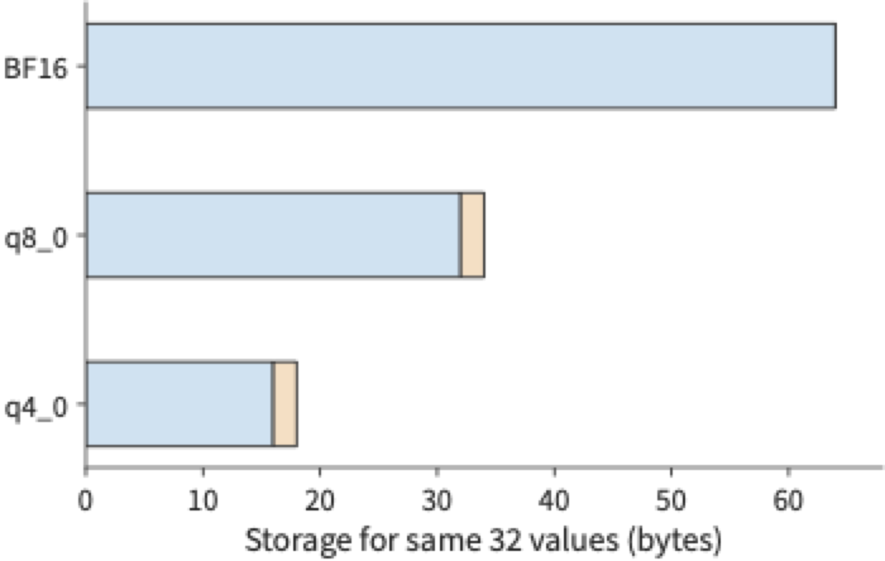
After the long request from the opening worked example finishes generating, the block-allocated BF16 KV occupies 1188 MiB in total. Switching to q8_0 with the same layout requires \(1188\times34/64=631.125\) MiB; for 16 independent long requests, this totals about 9.86 GiB, which fits within the reserved 12 GiB of memory. This shows that sharing and compression save space through different means: sharing removes duplicate prefixes, while compression reduces the number of bytes each value occupies.
When computing attention with compressed KV, the read volume decreases, but format conversion takes extra time. Let \(\Delta D\) bytes fewer be read per computation, \(\beta\) be the effective bandwidth, and \(T_c\) be the additional serial execution time from conversion; the net time saving is then
For example, converting an 8K context on an RTX PRO 6000 from BF16 to q8_0 reads 540 MiB fewer. At an effective bandwidth of about 1.16 TB/s under read-bound conditions (Section 8.6.3, 65% of the 1792 GB/s peak), this saves about 0.487 ms. If conversion adds 0.2 ms, the net saving is about 0.287 ms; if conversion adds 0.8 ms, it instead adds about 0.313 ms. Whether the same compression format speeds up execution depends on whether the conversion time is less than the read time saved.
The longer the context, the more time is saved by reading less. One early evaluation running Llama-3.1-8B on H100 fit output intervals for BF16 and FP8 as \(6.44+4.37\times10^{-5}L\) and \(6.58+2.37\times10^{-5}L\) ms respectively. FP8's fixed term is 0.14 ms larger, while its growth term per context token is \(2\times10^{-5}\) ms smaller. Dividing the difference in fixed overhead by the difference in per-context-token cost gives a crossover point of about 7000 tokens; at 2K, BF16 is about 6.53 ms and FP8 about 6.63 ms, while at 16K they are about 7.16 and 6.97 ms respectively. At longer contexts, the time saved by reading less exceeds the added fixed overhead.15
The opening of this section noted that context representation determines how many values must be stored per token; the local and global state categories in hybrid attention models can also be compared by capacity in this way. Under an 8K-context baseline, add up the capacity of the global history and the effective SWA. DeepSeek V4.1's two figures are 6.953 MiB and 2.578 MiB, totaling 9.531 MiB; V4's corresponding two items total 30.521 MiB, about 3.20 times V4.1's total. The local window occupies fixed space, so the combined capacity gap at short contexts is smaller than the 3.95-fold gap in global history alone.
8.4.3 Weight Offloading, Prefetch, and Per-Step Movement¶
Compression reduces the size of the data itself. Another way to expand capacity is to let data reside on the GPU in rotation: bringing it in only when needed for computation, and reusing that space once done. Weight offloading moves some weights that would otherwise stay resident on the GPU to host memory, and copies them back to the GPU just before computing the corresponding layer. The accelerator memory this frees up can be used for KV, but every forward computation must re-copy these weights. As a request generates output step by step, this movement repeats with every round of decode.
The three BF16 matrices of one FFN layer in Qwen3-8B total 288 MiB. Offloading one layer out of every four across 36 layers offloads nine FFN weight sets, freeing 2592 MiB. The GPU must also reserve buffer space for prefetch (copying a layer's weights to the GPU ahead of computing that layer): one buffer set occupies 288 MiB, giving a net saving of 2304 MiB; two sets occupy 576 MiB, giving a net saving of 2016 MiB. Taking the 1152 MiB KV of one 8K input as the unit, the former can accommodate two more such requests, the latter only one. If we instead reserve the 1188 MiB needed once generation finishes, both schemes can only accommodate one additional complete request.16
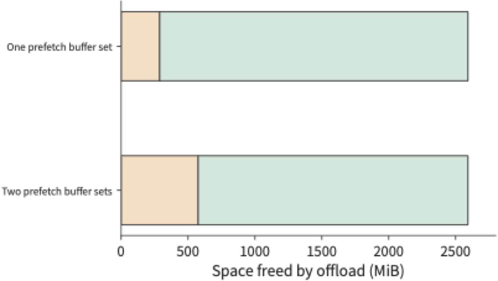
Prefetch must obey two ordering relationships: computation can only read the weights once the copy has finished, and the buffer can only be written with the next set once computation no longer needs the current one. With one buffer set, the same buffer is used in turn for copying, computation, and the next copy; with two sets, one layer's computation can proceed while the next layer's weights are copied into the other buffer. This overlaps copying with computation, but the buffers themselves also use more memory.
First, compute the link cost of this movement. This card connects to the host over PCIe Gen5 x16, nominally 64 GB/s per direction. Each round must bring in 2592 MiB, i.e., 2.72 GB, requiring
This already exceeds the 26.26 ms of one batch-1 decode round. Even if all other computation can fully overlap with the copy, each round still requires at least about 42.5 ms. If each round generates one token for each of four requests, total output throughput is at most about \(4/0.0425\approx94\) tokens/s, and each request's output interval is also at least about 42.5 ms. Generating 256 output tokens requires 255 subsequent forward computations, and weight movement alone would take about 10.8 seconds. So offloading these weights over PCIe cannot meet a 7-second completion deadline.
There are also much faster links between CPU and GPU. GH200 connects the Grace CPU and Hopper GPU with NVLink-C2C, at 450 GB/s per direction. The same 2.72 GB now takes at least about 6.0 ms per round, totaling about 1.54 seconds over 255 rounds. When each round's copy is shorter than one round of decode computation, prefetch can fully mask the copy behind computation.
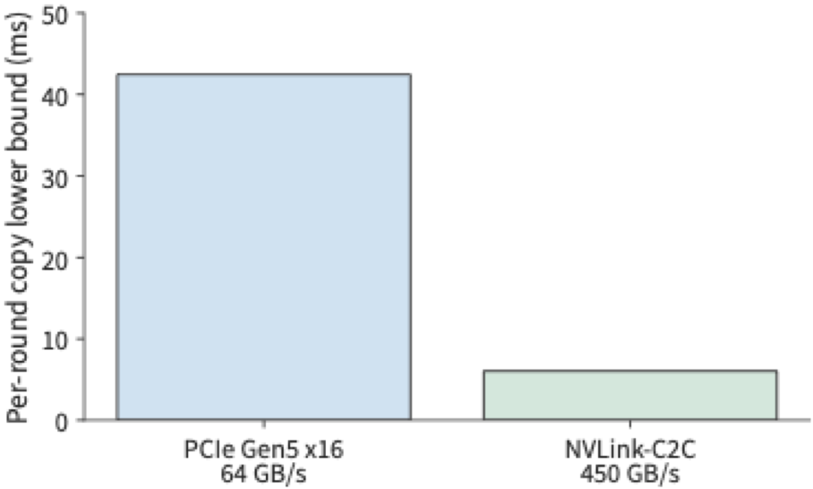
What matters here is the ratio between the data volume moved per round and the effective bandwidth. Prefetch lets movement and computation happen concurrently, but the number of bytes to be transferred each round remains the same.
If weights are compressed before being moved, decompression time must also be added. Let \(S\) bytes be the original data, \(rS\) bytes the compressed size, \(B_{\mathrm{link}}\) the link bandwidth, and \(R_{\mathrm{dec}}\) the decompression throughput (measured in original output bytes). Transferring fully then decompressing takes \(rS/B_{\mathrm{link}}+S/R_{\mathrm{dec}}\), whereas direct transfer takes \(S/B_{\mathrm{link}}\); so compressing before moving is only faster when
Compressing 96 MiB of weights to a quarter of their size, direct transfer over PCIe Gen5 x16 takes about 1.57 ms, while transferring the compressed data takes only 0.39 ms; to retain this 1.18 ms saving, the decompressor must output more than 85.3 GB of original data per second. The faster the link, the higher the required decompression throughput.17
In the offloading discussed in this section, model computation is still always executed by the GPU, and host memory is responsible for holding weights not currently in use. Section 9.3 will further shift the location of computation itself: once expert weights already reside in host memory, the CPU can compute directly, sending only the smaller activations back to the GPU — at which point we need to compare each expert's input row count, CPU computation time, and weight transfer time.
Exercise 8-5 · Computation: capacity saved by weight offloading versus added movement. Suppose nine FFN weight sets are offloaded, each occupying 288 MiB. Suppose each prefetch buffer set can hold one FFN weight set; compute the net accelerator memory saved when using one versus two buffer sets, and find how many 1152 MiB input states, or how many 1188 MiB complete request states, this space can additionally accommodate. Then, taking PCIe Gen5 x16's 64 GB/s per direction and GH200 NVLink-C2C's 450 GB/s per direction respectively, find the lower bound on per-step copy time and on the cumulative time for 255 steps of copying. If the total time budget for all copying is 1 second, find the minimum required unidirectional bandwidth.
8.4.4 Choosing Capacity and Speed Under a Quality Constraint¶
Section 8.4.2 computed the space saved by compression and the added conversion time, but did not yet answer whether the answer remains the same after changing the numerical format. Here, the execution backend refers to the kernel implementation that actually performs the attention computation. Compressing KV changes the stored values; switching execution backends may also simultaneously change the computed format of Q, the conversion process, and the numerical precision of the reduction operations. Comparing the storage format and computation precision of tensors item by item lets us pinpoint the source of output differences.
The following uses eight fixed tasks for this item-by-item comparison; three figures arrange these tasks in the same order. The eight tasks come from documents of two lengths: each document contains either 128 or 512 six-digit records, with four independent documents at each length, labeled in the experiment logs as n128-r0 through n128-r3 and n512-r0 through n512-r3, and numbered tasks 1 through 8 in the figures in that order. Each task is run twice at each of two concurrency levels, comparing the effect of different numerical formats using the same task.
One set of Qwen3-8B experiments kept BF16 weights fixed and compared three attention computation methods. Across 32 natural-generation runs, using BF16 KV answered 28 correctly; switching to the original FP8 implementation answered 26 correctly; keeping FP8 KV but restoring Q to BF16 again answered 28 correctly. This last configuration changed only the precision of Q, and the results still changed — showing that KV's storage format and Q's computation precision must be considered separately.19
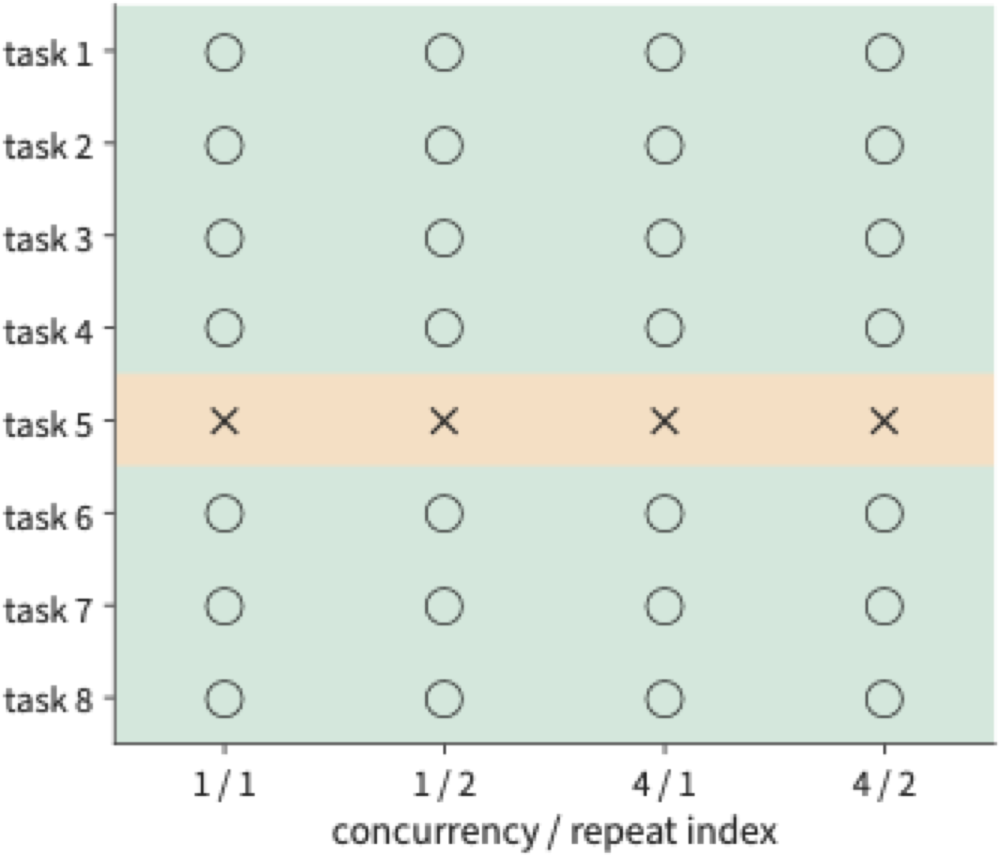
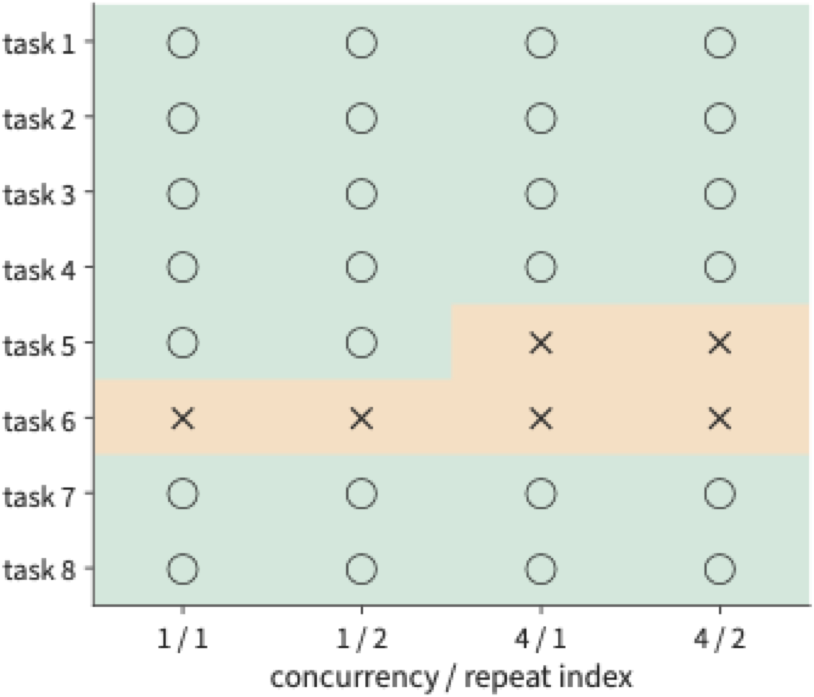
Figure 8-28 further restores only the query Q to BF16 precision, keeping KV in FP8. Comparing the same column across the three figures reveals which specific questions' results changed, not just the total correct count.
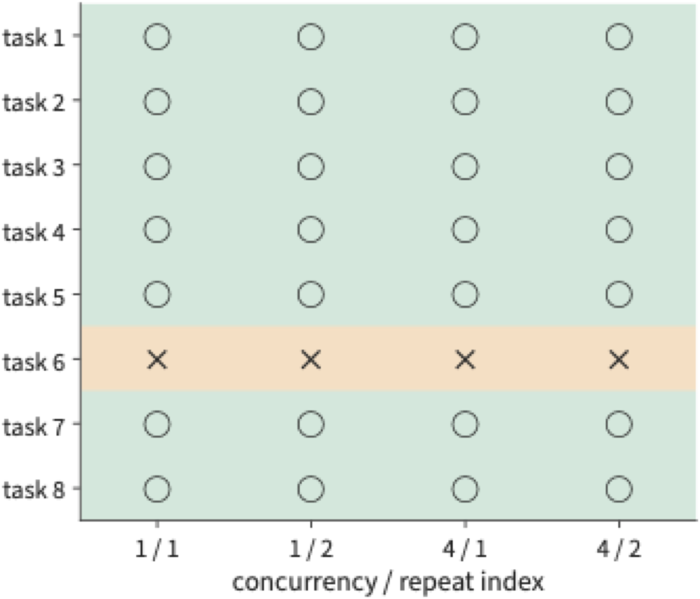
In the figure, task 5 (n512-r0 in the experiment log, the first long document with 512 records) is wrong all four times under BF16 KV, but correct all four times under "FP8 KV + BF16 Q"; task 6 (n512-r1) shows exactly the opposite pattern. Both configurations answer 28 correctly overall, but different tasks are the ones answered wrong. Lining up results for the same task lets us see exactly where the differences occur, and whether they hold consistently across repeated runs.
Errors also add to the time needed to complete a task. After a first answer fails and is retried, the total time to reach a correct answer must include the first generation, checking the answer, and generating again. In one recorded experiment, two retries corrected the error but added about 2.0 seconds of extra generation time and 92 tokens. If the first answer is faster but also more error-prone, completing the whole task may actually take longer.20
Compare the two KV capacity schemes discussed earlier: 16 independent long requests occupy about 9.86 GiB using q8_0, versus about 5.91 GiB with a shared BF16 prefix. To judge which scheme is more suitable, we must also factor conversion, generation, and retry time into each request's total duration. The comprehensive worked example in Section 8.6 will complete this step.
Exercise 8-6 · Data analysis: how KV compression affects capacity, answer correctness, and retry cost. Assuming each group contains 32 values with an additional 2 bytes for the scale, recompute the KV capacity for an 8K input and a complete long request under q8_0 and q4_0 formats. Then read the accompanying results for three KV/Q precision configurations item by item, and list which questions changed correctness between BF16 KV and "FP8 KV + BF16 Q". Finally, read the retry records, sum the first-answer and retry times for each successful task, and compare this with the result obtained by counting only the time of the final successful generation.
8.5 Speculative Decoding¶
8.5.1 Drafts, verification, rollback, and correctness¶
The previous two sections mainly changed how data is stored and read, but each request still generated one round at a time. If a single target-model computation could determine multiple outputs at once, generating 256 tokens would no longer require the same number of rounds. In ordinary decode, the target model produces one token per forward pass. Section 8.2 merged different requests into one computation so that a single weight read serves more rows. Speculative decoding takes a different approach: first generate a draft sequence for the same request, then have the target model verify several of its tokens simultaneously. If the target model accepts multiple draft tokens, a single computation determines multiple outputs.
Start with greedy generation: at each step, choose the token to which the target model assigns the highest probability. Suppose the draft sequence contains four tokens, and the target model computes, for each token position, what the output should have been. If the first two match the draft but the third does not, the final result keeps the first two draft tokens and outputs the target model's chosen token at the third position. The fourth draft token, generated after the incorrect third token, is discarded along with it. The next round continues generation from the corrected sequence. If all four draft tokens match, the target model can usually generate one more token after them.
Figure 8-29 shows the handling order when the third token diverges. Although the target model has already computed verification results for the tokens that follow, the fourth token depends on the incorrect third draft token and cannot be kept. One verification pass ultimately keeps two matching draft tokens and one corrected token, for three outputs in total.
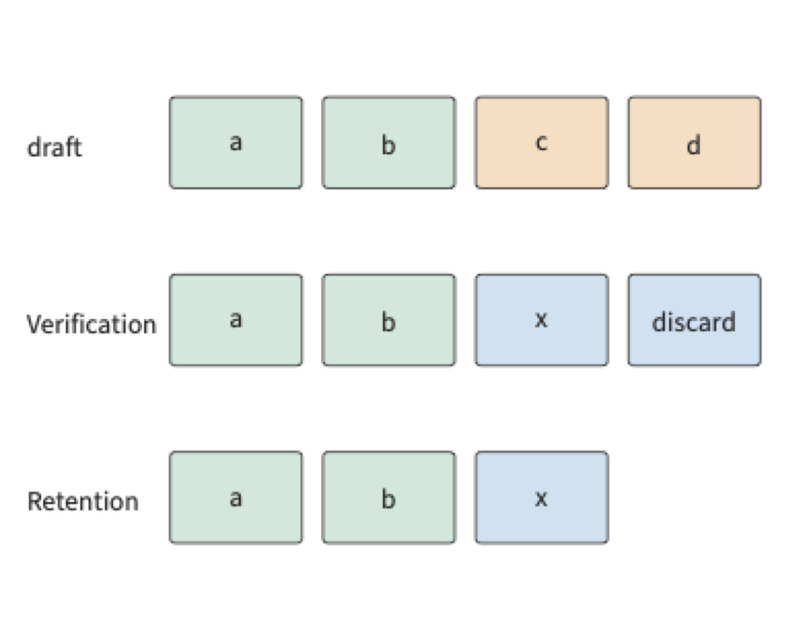
For random sampling, the final output must still follow the target model's probability distribution. Let the target distribution be \(p(x)\) and the draft distribution be \(q(x)\). First sample a draft token \(x\) from \(q\), then accept it with the following probability:
The probability of sampling \(x\) and accepting it directly is \(q(x)\alpha(x)=\min(p(x),q(x))\). To reach the target probability \(p(x)\), there remains a shortfall of \([p(x)-q(x)]_+\). Here \([z]_+=\max(z,0)\) keeps only the positive difference. So after rejecting the draft token, this positive residual is normalized and resampled from the resulting distribution. Combining direct acceptance with rejection-and-resampling, the final probability of outputting \(x\) is exactly \(p(x)\).21
Illustrate this with a toy example using only two symbols, A and B. The target distribution is \(p(A)=1/4\), \(p(B)=3/4\). If the draft always generates A, accept A with probability \(1/4\); the remaining \(3/4\) of the time, reject A and output B instead. If the draft always generates B, accept B with probability \(3/4\); otherwise output A instead. Both methods ultimately yield the target distribution, but the draft's acceptance probability differs, and so does the resulting execution efficiency.
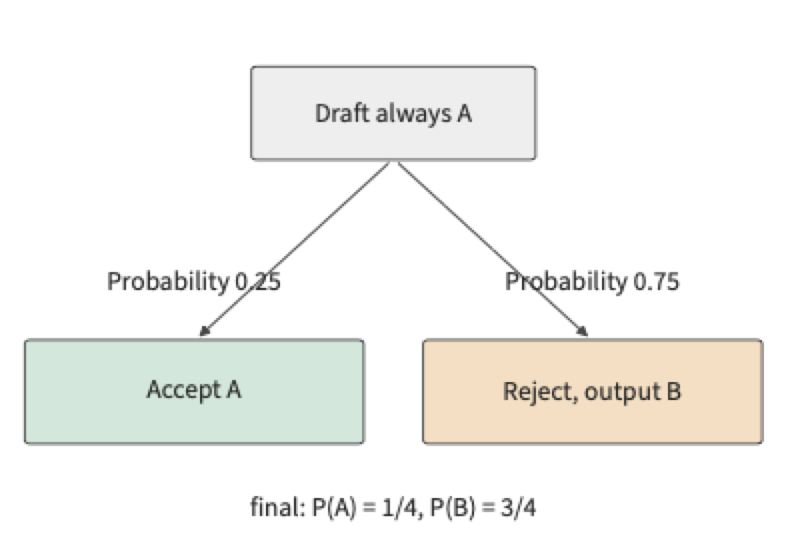
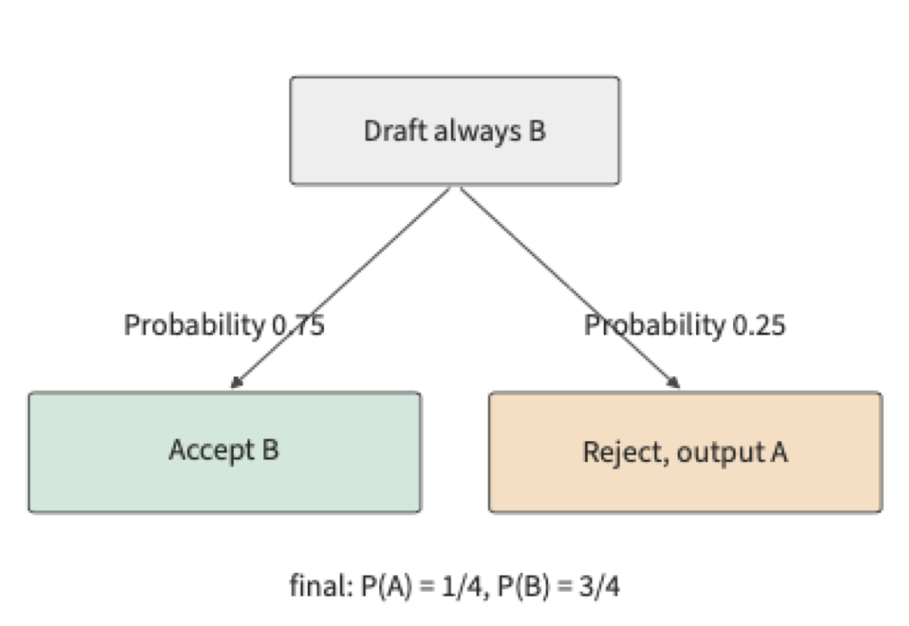
After verification, the effective KV length is adjusted to the confirmed output position, and the KV corresponding to discarded draft tokens no longer participates in subsequent computation. The pager updates block references according to the confirmed output length, and the sampler and grammar checker (the component that restricts eligible tokens to a specified output format) are also restored to the corresponding state. The next round then continues computation from the corrected sequence.
8.5.2 Per-round latency and output count¶
Speculative decoding changes both the per-round latency and the number of tokens ultimately output per round. Let round \(r\) take time \(T_r\) and output \(N_r\) tokens; then, across multiple consecutive rounds, the average latency per output token is
For example, if two rounds each take 1.5 ms and output 1 and 5 tokens respectively, the total is 3 ms for 6 tokens, giving an average of 0.5 ms per token. If instead one first computes the per-round average and then takes an unweighted average of 1.5 and 0.3 ms/token, the result is 0.9 ms. This is equivalent to giving the round that outputs only one token the same weight as the round that outputs five. Only dividing the total time by the total token count gives the correct average latency per token.
Worked example: how does the draft acceptance rate determine the average per-round output count? Continue with the two-symbol target distribution, assuming independence across token positions. Each round the draft generates four copies of the same symbol; the final output also includes the corrected token upon rejection, or an extra token if all are accepted. Let \(a\) be the acceptance probability at the current position, given that all preceding draft tokens have been accepted. Each round outputs at least one token; outputting a second requires accepting the first draft token, with probability \(a\); outputting a third requires accepting the first two, with probability \(a^2\). Summing these terms, the average per-round output count is
Each term above represents the probability of "outputting at least this many tokens" in the end. When the draft is AAAA, \(a=1/4\), and the average per-round output is about 1.33 tokens; when the draft is BBBB, \(a=3/4\), and the average output is about 3.05. On the RTX PRO 6000, at batch 1 with a 2K context, ordinary decode takes 26.26 ms per round (Experiment 8-1). When verifying 5 positions, the weights and KV read are the same as for ordinary decode; the extra matrix computation for the additional 4 rows amounts to about 65 GFLOP, which at 62% of BF16 peak takes only about 0.2 ms, so a verification round is still counted as 26.26 ms. Experiment 8-5 observes the same phenomenon: DFlash (a draft network that generates an entire draft segment in parallel in a single forward pass) generates 7 draft tokens per round and verifies 8 positions, with a median latency of 15.2 ms — comparable to the 16.9 ms of one ordinary decode step under the same configuration. Adding the 0.1 ms for querying the draft, one round totals 26.36 ms, and the two draft configurations correspond to average per-token latencies of about 19.8 and 8.64 ms respectively — both faster than the 26.26 ms/token of ordinary decode. Verification barely adds to the round's duration, and even when most draft tokens are rejected, each round still yields at least one token, so even the low-acceptance-rate AAAA still achieves a speedup.22
The time saved by accepting more draft tokens can also be offset by the query overhead. To beat ordinary decode, the total time of one round must be less than the average output count times 26.26 ms. After subtracting the 26.26 ms required for verification, AAAA leaves about 8.7 ms for the draft query, while BBBB leaves about 53.9 ms. Figure 8-32 plots these two crossover points against the query cost axis.
![Figure 8-32: Two-symbol target distribution, four draft tokens generated per round. Each round's verification takes 26.26 ms, with query time varying along the horizontal axis; the latency per output token is the round's total time divided by the average output count. Ordinary decode is 26.26 ms/token (RTX PRO 6000, batch 1, 2K context). There is no early stopping, and extra tokens are counted in the output total. The marked points show the case where query latency is 0.1 ms; AAAA and BBBB cross ordinary execution at query times of about 8.7 and 53.9 ms respectively.](images/figure-8-12-speculation.png)
The preparation work before using a draft must also be counted in the total time. If building a context index takes 2 seconds, and the BBBB draft saves about \(26.26-8.64\approx17.6\) ms per output token, then generating about 114 tokens would offset this 2-second overhead. A request outputting 256 tokens with ordinary decode takes about 6.72 seconds; building the index first for 2 seconds and then using the BBBB draft is expected to take about 4.22 seconds. If the index can be built in advance and shared across multiple requests, this overhead can be amortized over even more output.
8.5.3 Draft sources and serial versus parallel generation methods¶
How much time four draft tokens save depends both on how many pass verification and on how long it takes to generate that draft segment. Real systems can look up drafts from the context, or invoke an additional network to generate drafts; the two choices bring different preparation times and memory footprints.
Context lookup finds repeated spans from the input or existing responses, with the main overhead being matching and index construction. An independent small model generating drafts step by step requires additional storage for its own weights and KV. EAGLE-style methods feed the target model's intermediate representations into a smaller prediction network; DFlash-style methods generate multiple draft tokens in parallel. An MTP head built into the model uses jointly trained prediction ability to generate drafts.21
Dividing each round into four stages — draft generation, verification preparation, target verification, and output determination — allows these methods to be compared term by term. Take the DFlash draft network from Experiment 8-5 as an example; its weights are about 1.95 GiB (2.10 GB). At batch 1's effective bandwidth (26.26 ms to read 15.44 GB, about 588 GB/s), one forward pass of this network takes about 3.57 ms. Generating four draft tokens one at a time would require four forward passes, totaling 14.28 ms; generating the entire draft segment in parallel, as DFlash does, requires only one forward pass, about 3.57 ms. Target verification requires 26.26 ms in either case. If each round ultimately outputs an average of 3 tokens, the serial approach costs about \((14.28+26.26)/3\approx13.5\) ms per token, while the parallel approach costs about \((3.57+26.26)/3\approx9.9\) ms per token. Here, the speedup comes from the reduced draft generation time.
Now suppose the parallel draft's acceptance rate is lower, and the average output count drops to 2. The average latency per output token rises to \((3.57+26.26)/2\approx14.9\) ms — slower than the serial approach. The faster draft generation saved 10.7 ms, but with fewer outputs per round, the time amortized per output token increases, and the overall request becomes slower.
8.5.4 Dynamic selection of draft length and concurrency contention¶
Once the draft source is fixed, one must also decide how long each round's draft should be. Longer drafts raise the upper bound on how many tokens a round can output. But only if the preceding tokens are all accepted do the later ones have a chance to make it into the final output. Let \(a_j\) be the conditional acceptance probability of the \(j\)-th token given that all preceding draft tokens have been accepted; then the average output count for a draft of length \(m\) is
Increasing the draft length from \(m-1\) to \(m\) increases the average output by \(\Delta N=\prod_{i=1}^{m}a_i\) tokens. Suppose this adds \(\Delta T\) time; originally the round took time \(T\) and output an average of \(N\) tokens, giving an average latency per output token of \(T/N\). For the increased draft length to yield a shorter average latency per output token, we need \((T+\Delta T)/(N+\Delta N)<T/N\), which rearranges to
In other words, the average time paid for the newly added output must be lower than the original average latency per token. Since acceptance probabilities are multiplied successively, later draft tokens have progressively lower survival probability, making it harder for them to yield sufficient time benefit.
The preset execution shape also affects the added time \(\Delta T\). If verifying four or five tokens both pad each token's feature vector to an eight-row matrix and use a pre-prepared eight-row computation graph, adding one more token requires relatively little extra computation; but if the number of tokens to verify goes from eight to nine, requiring padding to a sixteen-row matrix and a switch to the corresponding computation graph, the computation jumps abruptly. The number of concurrent requests also affects the benefit of speculative decoding: under low load, verifying multiple rows can use otherwise idle compute; under high load, ordinary batching already shares weights efficiently, and draft generation and verification must additionally contend with other requests for accelerator and memory resources.
A set of measurements compares different draft lengths. K7 and K15 denote configurations generating 7 and 15 draft tokens per round, respectively. For Qwen3-8B/DFlash's short-extraction task at concurrency 1, the median full latency for ordinary decode, K7, and K15 is about 90.0, 30.6, and 29.4 ms. Switching from ordinary execution to K7 saves about 59 ms, while going from K7 to K15 saves only about 1.2 ms more. The per-round logs also show rounds where both block lengths accept only a single draft token: K7 discards six draft tokens, K15 discards fourteen, and the final output length is the same. The larger verification block increased the computation without producing more output in that round.23
Therefore, when dynamically adjusting draft length, the condition above can be applied: generate longer drafts for requests with high acceptance probability and low added time per verification position, and shorten the block length for requests that often fail verification at the first few positions, or that would need to switch to a larger execution shape. When determining draft length, one must also leave room for the KV of both the target model and the draft model, and then follow the method in Section 8.3 to decide how many requests to admit.
Exercise 8-7 · Derivation: what draft length minimizes the average latency per output token? Fix the draft acceptance probability at \(a=3/4\), and compute the average per-round output token count for draft block lengths of 1, 2, 4, and 8. Using the RTX PRO 6000 data from Section 8.5.3, rounded to one decimal place: one verification round takes 26.3 ms, and the draft network generates tokens one at a time at 3.6 ms per draft token, i.e., \(T_m=26.3+3.6m\) ms; find the average latency per output token for each block length. Then suppose the draft executes in groups of 4 positions, with partial groups still timed as full groups, i.e., \(T_m=26.3+3.6\times4\lceil m/4\rceil\) ms; compare block lengths 4 and 5, and use the marginal condition to explain the choice.
8.6 Performance and Configuration Choices Under Request Load¶
8.6.1 Arrival rate, queueing, admission, and cancellation¶
Sections 8.2 through 8.5 discussed how to change an instance's memory footprint and execution method. Online serving must also handle requests arriving continuously: before one request finishes, the next has already entered the queue; while one request waits for a tool to return, model computation pauses, but its KV must still be retained. The scheduler must therefore both arrange current computation and retain state for requests that are generating or waiting to continue.
How much space is needed to retain the state of these unfinished requests depends on how many requests are, on average, present in the system. In steady-state service, the average number of requests in the system satisfies Little's Law:
where \(\lambda\) is the average arrival rate and \(\bar T\) is the average time a request spends in the system. Summing the residence time of every request observed and dividing by the observation duration gives the average number of requests in the system. For example, at an arrival rate of 4 requests per second with an average residence time of 0.5 seconds, the system holds an average of 2 requests; if the average residence time rises to 2 seconds, this becomes 8.
Some of these requests are queueing, some are computing, and some merely retain state. Increasing batch size can raise output throughput, but KV reads, computation, and other overheads gradually limit this growth. When processing speed can no longer keep up with a rising arrival rate, new requests accumulate in the queue, and waiting time lengthens accordingly.
Admission control decides whether to begin processing a new request. Before accepting a request, check the available KV space and how much time remains before the deadline. For the short request in Section 8.1, 0.196 seconds to first output plus 6.76 seconds of generation already uses 6.95 seconds; queueing for another 0.1 seconds would exceed the timeout. Identifying such requests in advance allows the system to reject them, hand them to another instance, or use a faster execution configuration. Cancellation, by contrast, stops scheduling further iterations once a request has lost its usefulness, and releases its space once in-flight accelerator operations complete.
These optimizations interact with each other. KV compression lets an instance admit more requests simultaneously; a larger batch, in turn, lets ordinary decode share weights more effectively, changing the relative benefit of speculative decoding. The following applies these changes to the same set of requests, computing the combined execution time and memory footprint.
8.6.2 Effective throughput under quality and SLO constraints¶
Looking only at queue length and completion speed cannot tell whether users actually got a usable answer. The quality experiments in Section 8.4.4 produced wrong answers, while queueing produces correct-but-late responses. Only by counting both kinds of loss together can service effectiveness be evaluated. Let the observation window have length \(T_{\mathrm{obs}}\), let \(Q_i=1\) when request \(i\) is correct, and let \(D_i=1\) when it completes on time. Counting by completed requests, the effective throughput is
The numerator counts only requests that are both correct and completed on time. If instead the numerator counts all completed requests, one gets the completion throughput. The gap between the two shows how much processing capacity went into wrong or late answers.
A set of measurements shows the size of these two losses. The Qwen3-8B retrieval experiment used the same eight questions, requiring requests to complete correctly within 3 seconds of arrival, and compared three modes: individual admission, continuous batching, and submitting all requests at once. Each experiment submitted 16 requests; across all experiments, 336 responses were generated in total, of which 294 were correct, but only 155 also met the deadline. The remaining 139 correct responses returned too late to meet the service requirement.24
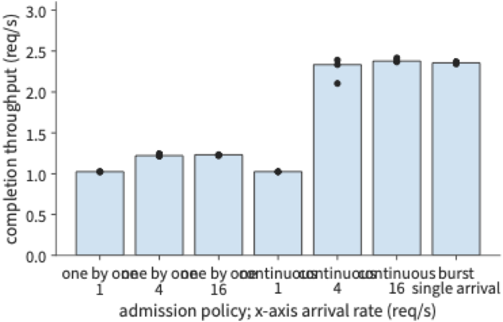
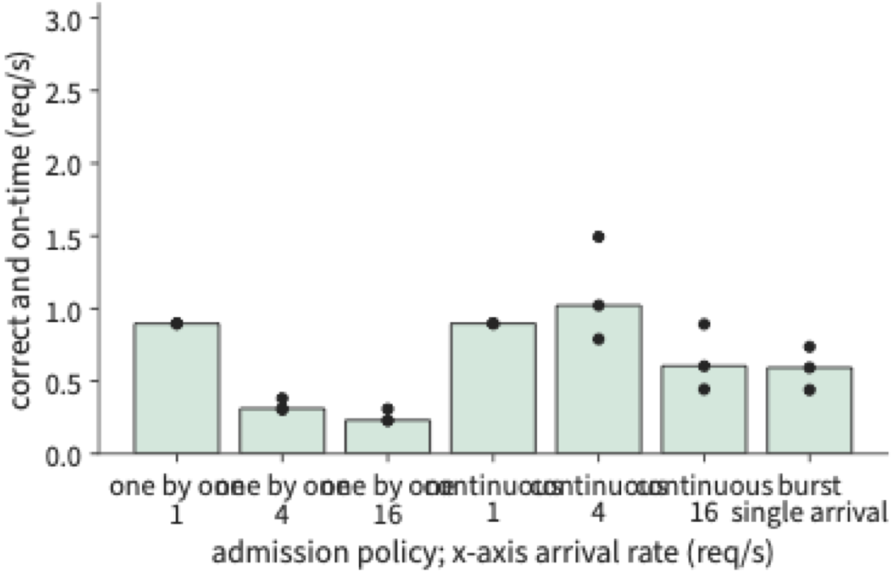
At an arrival rate of 1/s, both online strategies achieve an effective throughput of about 0.90 req/s. With less work per batch, individual admission can also handle most correct requests promptly. When the arrival rate rises to 4/s, individual admission's completion throughput is about 1.22 req/s, but its effective throughput drops to 0.31 req/s; the queue lengthens, and many correct outputs miss the deadline. Continuous batching raises completion throughput to about 2.33 req/s, with effective throughput reaching about 1.02 req/s — more requests complete within the deadline.
Pushing the continuous-batching arrival rate further to 16/s, completion throughput only rises to about 2.38 req/s, while effective throughput instead falls to about 0.60 req/s, a decrease of about 41%. Completion throughput has essentially stopped growing; more arrivals mainly add to queueing time. For this set of windows, 4/s returned more correct answers on time than 16/s. When choosing a service configuration, first find the arrival rate at which effective throughput begins to decline, then limit the number of newly admitted requests to avoid excessive queueing time.
With individual admission, other requests that have not yet entered the engine still wait in the application queue. Timing should therefore begin from each request's originally scheduled arrival time, including this wait outside the engine. Combining the measurements in this section, one must compute separately how many tokens per second the accelerator outputs, how long a single request waits, and how many requests per second are correct and on time.
8.6.3 Configuration, accelerators, and full-task cost¶
Before comparing configurations, convert measurements into processing speeds. Once batching, precision, and cache settings are fixed, dividing completed work by accelerator occupancy time gives the actual processing speed for each stage: prefill speed \(r_P\), measured in new input tokens processed per second, and decode speed \(r_D\), measured in completed decode calls per second. When multiple requests within a batch share one execution pass, each request counts as one completed call, and the occupancy time is counted only once. For a request with \(L\) new input tokens and \(G\) output tokens, the accelerator occupancy time (in GPU-seconds) is
Without a matching measurement, one can estimate by multiplying specification values by efficiency: prefill time is estimated as matrix computation divided by the product of peak compute and compute efficiency; the time for one decode round is estimated as the bytes of weights and KV read divided by the product of peak bandwidth and bandwidth efficiency. The table below gives the efficiency measured on the RTX PRO 6000 in Experiment 8-1. One decode round is taken from rounds in the engine's per-round log that do not include prefill; the interval seen by the client also includes delivery time and is slightly longer, e.g., the 26.5 ms in Section 8.1.1.
| 2K context, no shared prefix | batch 1 | batch 4 | batch 16 | batch 64 |
|---|---|---|---|---|
| Weights and KV read per round | 15.44 GB | 16.34 GB | 19.97 GB | 34.46 GB |
| Time required at 1792 GB/s | 8.62 ms | 9.12 ms | 11.14 ms | 19.23 ms |
| Measured decode round | 26.26 ms | 26.62 ms | 27.44 ms | 29.63 ms |
| Decode bandwidth efficiency | 33% | 34% | 41% | 65% |
| Prefill compute efficiency | 62% | 61% | 61% | 58% |
Decode efficiency rises with batch size not because reading got faster. This experiment disabled CUDA Graph, so every round had to submit kernels one by one: the amount read rose from 15.44 GB to 34.46 GB, while the round only grew from 26.26 ms to 29.63 ms — the larger the batch, the more bytes over which this nearly fixed overhead is amortized. Prefill efficiency, meanwhile, holds steady at 58%–62% of BF16 peak; for an 8K input with the first 6K already cached, it is 52%–58%.
The bandwidth efficiency in the table is the MBU from Section 1.2.2, and the compute efficiency is the MFU. At batch 1, one decode round exceeds the 8.62 ms read lower bound by about 17.6 ms, and this gap barely changes with the amount read. By the criterion in Section 1.3.4, this is not model overhead but rather the cost of submitting kernels one at a time along with host-side scheduling and synchronization — overhead that CUDA Graph and better scheduling can remove; the vLLM v0.6.0 case in Section 5.5.1 shows how far host-side overhead can be reduced.
Comprehensive example: choosing prefix sharing, compression, and speculative configurations under memory and deadline constraints. Effective throughput provides the standard for evaluating service, while capacity and timing analysis can rule out unsuitable configurations before running anything. Take the inference instance defined at the start of the chapter: the RTX PRO 6000 allocates 32 GiB to this instance; after subtracting weights and the basic workspace, 12 GiB remains for KV and auxiliary buffers. Sixteen long requests arrive simultaneously, each with 8192 input tokens and 256 output tokens, of which the first 6144 input tokens are identical; the deadline is 7 seconds. The four schemes below are compared, assuming all four give correct answers. The sharing scheme has already cached the common prefix before the requests arrive. The speculative scheme uses the DFlash draft model from Experiment 8-5. Enabling it increases peak process GPU memory by about 3.1 GiB (from 17,706 MiB to 20,894 MiB), of which about 1.95 GiB is the draft model's weights. The draft model must also process the input; in Experiment 8-5, with an input of about 2300 tokens, first-token time rose from 129.4 ms to 141.6 ms, an increase of 9.4%. Assume this set of requests averages 3 output tokens per round.
The sharing scheme for this set of requests is exactly the condition measured in Experiment 8-1: 8K input, first 6K cached, batch 16. The prefill stage processes 32,768 new tokens in 2.04 s, giving \(r_P\approx16{,}059\) new tokens/s, reaching 58% of peak compute; thereafter each decode round takes 27.35 ms, giving \(r_D=16/0.02735\approx585\) calls/s. Each request occupies \(t_{\mathrm{GPU}}=2048/16059+255/585\approx0.563\) GPU-seconds, totaling about 9.01 GPU-seconds for the 16 requests. The remaining schemes are derived from this table and measurements under the same conditions; the table below gives the per-stage times for the full batch of 16 requests.25
| Scheme | State organization | Before first token returns (full-batch prefill) | Execution after first token returns |
|---|---|---|---|
| A | BF16, independent context | 7.34 s | 255 rounds, 29.63 ms each |
| B | BF16, shared prefix | 2.04 s | 255 rounds, 27.35 ms each |
| C | q8_0, independent context | 7.34 s | 255 rounds, about 28.26 ms each |
| D | BF16, shared prefix with speculation | 2.23 s | 85 rounds, 3 output tokens each round, 27.35 ms each |
A and C do not share a prefix, so each request must fully process 8192 tokens; the whole batch's matrix computation is 2137.5 TFLOP, which at the same 58% compute efficiency takes about 7.34 s. A reads 34.46 GB per round, the same as 64 requests at 2K context, giving 29.63 ms from the table; C's KV is compressed by \(34/64\), reading 25.40 GB per round, which interpolates between the 19.97 GB and 34.46 GB columns in the table to about 28.26 ms — not yet counting format-conversion time. D's prefill is 9.4% more than B's, about 2.23 s. In D, each round verifies 8 positions for each of the 16 requests, requiring about 2.56 TFLOP of matrix computation, which at 58% efficiency takes about 8.8 ms — shorter than B's 27.35 ms per round; following Section 8.2.1, taking the larger of the two, each round remains 27.35 ms. The draft network's forward pass also completes within the same round; in Experiment 8-5, DFlash's median per-round latency was no longer than one ordinary decode step (Section 8.5.2), so no additional time is added here.
First check whether memory suffices. A requires \(16\times1188=19008\) MiB, exceeding 12 GiB, and cannot admit this set of requests simultaneously. B needs only one prefix copy plus 16 private states, totaling 6048 MiB, about 5.91 GiB. C's state, compressed by \(34/64\), totals about 9.86 GiB. D adds 3188 MiB on top of B, totaling 9236 MiB, about 9.02 GiB. B, C, and D can all fit in memory, so compare the time each needs to complete the requests.
B's total time is \(2.04+255\times0.02735=9.01\) seconds, consistent with the 9.02-second median request latency measured in Experiment 8-1, but this exceeds the 7-second deadline. On this card, just 255 rounds of decode take 6.97 seconds; generating 256 output tokens one token at a time for all 16 requests together cannot finish on time. C loses prefix reuse, with prefill rising from 2.04 s to 7.34 s, giving a total time of \(7.34+255\times0.02826=14.55\) seconds. D outputs 3 tokens per round, generating the remaining \(85\times3=255\) tokens in 85 rounds, for a total time of
With A ruled out by insufficient memory and B and C ruled out by timeout, only D returns all 16 correct answers on time. This comparison used, in sequence, the capacity after prefix sharing, the size under a compressed format, the per-round time, and the per-round output count. On this card, the time for one decode round barely changes with batch size or context length; only reducing the number of rounds can meaningfully shorten the generation stage.
Figure 8-35 plots these two checks on the same plane. Crossing the dashed line horizontally means KV and auxiliary buffers exceed 12 GiB; crossing it vertically means completion time exceeds 7 seconds. Only D falls within both limits.
![Figure 8-35: Comparison of configurations for 16 long requests on the RTX PRO 6000. The horizontal axis is KV and auxiliary buffer usage, after subtracting the shared weights and basic workspace; the vertical axis is the total time for the whole batch of requests, derived from measurements in Experiments 8-1 and 8-5. A lacks sufficient memory and cannot run on this instance; the figure shows the time it would require. The shaded region satisfies both the 12 GiB and 7-second limits. A is BF16 with independent context, B is BF16 with shared prefix, C is q8_0 with independent context, and D is BF16 with shared prefix plus speculative decoding.](images/figure-8-14-design.png)
Finally, compare cost. The time this card spends per qualifying result equals the total time from arrival to full completion for the batch, divided by the number of qualifying results. For D, this is \(4.56/16\approx0.285\) GPU-seconds; at a power cap of 600 W, the energy per qualifying result is no more than about 171 J. B occupies this card for 9.01 seconds, yet under the 7-second deadline produces zero qualifying results — all of that time and energy is wasted.
How does the choice change if memory shrinks or output shortens? If the available memory for KV and auxiliary buffers drops from 12 GiB to 6 GiB, D's requirement of about 9.02 GiB no longer fits; B's requirement of about 5.91 GiB fits but would time out. This set of requests then has no feasible scheme, leaving only options such as relaxing the deadline, shortening the output, or switching to a draft source that consumes no GPU memory (see Exercise 8-9). If memory stays the same but output is shortened to 16 tokens, B needs \(2.04+15\times0.02735=2.45\) seconds, and D needs \(2.23+5\times0.02735=2.37\) seconds. Both finish on time, and D is only 0.08 seconds faster: the extra 0.19 seconds of prefill the draft model performs nearly cancels out the time saved by running 10 fewer decode rounds.
The analysis above covers only execution time within the instance. Computing the duration of a complete agent task also requires adding tool execution and external waiting. Suppose a task takes 100 seconds in total, of which decode accounts for 50 seconds; speeding up decode fourfold changes the total time to \(50+50/4=62.5\) seconds, an overall speedup of 1.6x. If decode originally accounted for only 20 seconds, the total time instead becomes \(80+20/4=85\) seconds, an overall speedup of only about 1.18x. In general, let \(f\) be the fraction of the original total time occupied by decode, and let that stage be sped up by a factor of \(s\), with the other stages' time unchanged; Amdahl's Law then gives
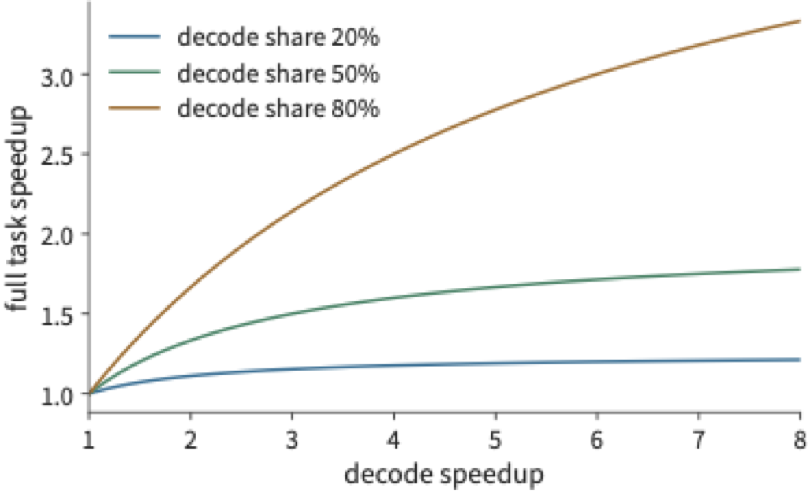
In Figure 8-36, the lower the decode fraction, the earlier the curve flattens: even as the generation stage keeps accelerating, tool calls and other waiting still occupy their original share of time. Comparing accelerator occupancy and energy consumption must also cover these stages, and should be computed against the final count of qualifying requests. Let \(T_{\mathrm{GPU}}\) denote the total time the accelerator is occupied during the observation window, \(E_{\mathrm{obs}}\) the total energy consumption, and \(N_g\) the number of qualifying results; then each qualifying result occupies on average \(T_{\mathrm{GPU}}/N_g\) of GPU time and consumes \(E_{\mathrm{obs}}/N_g\) of energy. Experiment 8-9 read the energy counters of both the GPU and the CPU package (the entire processor package) on the same card: under continuous batching at arrival rates of 1, 4, and 16 req/s, each qualifying result consumed 615.0, 652.0, and 1083.7 J respectively; one-at-a-time admission at 4 req/s consumed 1982.3 J. At 16/s, continuous batching's completion throughput is close to that at 4/s, yet more responses arrive late, and the energy per qualifying result is about 66% higher. Even when an answer is wrong or returns too late, the energy already consumed must still be counted toward the total cost.24
Exercise 8-8 · Calculation: how stage acceleration and draft preparation change total task time. A 100-second task consists of 20 seconds of prefill, 50 seconds of decode, and 30 seconds of tool use and waiting. Halve the time of each of the three parts individually, and find the total task time for each case. Separately, starting from the original task, reduce the decode time to one quarter of its original value and add 8 seconds of draft preparation time; find the net speedup, and calculate at what preparation time this change stops saving time.
Exercise 8-9 · Core · Comprehensive design: reducing the GPU time occupied per qualifying result within capacity and deadline constraints. Using the capacity and timing of the comprehensive example on the RTX PRO 6000, build Scheme E on top of B: share a BF16 prefix, and switch the draft to lookup from context (Section 8.5.2), with the index kept in host memory, consuming no GPU memory and adding no prefill; each request outputs on average 2 tokens per round, followed by 128 subsequent rounds, with the whole batch taking 27.35 ms per round plus a 0.1 ms lookup. Compute E's memory footprint, total time, and GPU-seconds occupied per qualifying result, and compare with B and D; then separately change the available memory for KV and auxiliary buffers to 6 GiB, and change the output length to 16 tokens, and re-select. In the open-ended experiment section, run both configurations against the same problem set and arrival trace, recording the arrival, first output, completion, correctness, and peak state for all requests, and compute effective throughput using this section's formulas.
History and Further Reading¶
Per-iteration admission of new requests, paged attention, and prefix-tree caching each advanced request scheduling, state allocation, and computation reuse respectively. The related designs of Orca, PagedAttention, and SGLang can be read along these lines; Sarathi-Serve and NanoFlow further studied chunking, pipelining, and overlap across different resources.47
The multi-adapter serving of Section 8.2.1 can be continued through Punica and S-LoRA, which respectively manage adapters and request state, executing each adapter's low-rank computation while sharing a common base model.10
Hybrid attention and recurrent models extend cache indexing into a state-recovery problem; Marconi and related work discuss recovery opportunities and cache value. Weight offloading, tensor encoding, and unified-memory execution connect accelerator capacity to link cost; the accompanying M2 Max records show the actual KV allocation and input processing of small models.121718
The acceptance and correction rules of speculative sampling laid the foundation for preserving the target distribution; subsequent methods that draft from context lookup, predict drafts from intermediate features, and generate drafts in parallel mainly change the per-round overhead and the accepted draft length. Complete agent tasks also include tool and external stages; published speed and task records can be read together with the stage breakdown of Section 8.6.2126
Chapter Summary¶
This chapter started from the execution process of a single request and progressively analyzed the relationships among memory capacity, computation arrangement, and service outcomes. Different requests share weights, while KV grows with each request's own context. Batching reduces the weight reads amortized per output token, but each request still must read its own context. This benefit depends on the performance of the underlying resources: once weights are instead served by faster, independent storage, batching no longer amortizes weight reads, and different batch sizes and speculative decoding schemes must be compared afresh. Continuous batching promptly uses the execution slots freed by short requests, while chunked prefill reduces the interference of long inputs on the generation process of existing requests.
How KV is managed determines how many requests an instance can handle simultaneously. Paging allocates space on demand, sharing keeps only one copy of a common prefix, and prefix caching further eliminates redundant computation. Appending, rewriting, and summarizing context change cache reuse as well as the cost of subsequent state storage and reads; when comparing these context organization methods against other serving optimizations, the same task quality requirements should be applied. Compression further reduces storage; offloading moves part of the weights off the accelerator, at the cost of repeated movement. Speculative decoding adds the overhead of draft generation and verification, but lets a single target-model computation determine multiple output tokens. All these changes can be compared through memory footprint, per-round latency, and outputs per round.
The comprehensive example at the end of the chapter first checks whether memory is sufficient, then determines whether the deadline can be met, and finally compares the GPU time occupied per qualifying result. With prefix sharing, the 16 long requests that previously could not fit can now execute simultaneously; but on the RTX PRO 6000, generating 256 output tokens token by token would still miss the deadline, and it is speculative decoding, by reducing the number of decode rounds, that lets them complete on time. When available memory decreases, this set of requests finds no feasible scheme; when the output is shortened, speculative decoding's advantage nearly disappears. The reasons behind each change in choice can all be traced back to the data volumes, execution times, and output counts derived in this chapter.
After completing the configuration comparisons in this chapter, three kinds of results should be recorded: how many requests' state can be held simultaneously under a given accelerator, precision, and request length; how fast prefill and decode each process work; and how request latency varies with batch size and arrival rate. These results already incorporate the effects of scheduling, caching, and kernel efficiency.
The next chapter builds on these results to decide what work each type of accelerator takes on, how many execution units are needed, and how KV is transferred and shared. Multiple accelerators can either jointly execute a single instance or form multiple complete replicas or separately scheduled stage pools. Batching decisions determine how existing resources process requests, while deployment decisions determine how these resources divide the work; together they shape the performance of the complete service.
-
The fixed model's batching computation and 8K comparison on the RTX PRO 6000. Full BF16 weights are 16,381,470,720 bytes, and one step of ideally shared matrix weight reads is 15,136,811,008 bytes; embeddings are looked up by row per request, but the full embedding matrix must still be kept resident in memory. The reads table is first computed with exact byte counts and then each item is rounded. ↩↩
-
NVIDIA RTX Blackwell PRO specification, Appendix A, Table 4, compiled in the rtx-pro6000-blackwell-ws row of the hardware parameters table. ↩
-
Raw records of the batch sweep. RTX PRO 6000, vLLM 0.23.0, BF16, three runs; the main text reports the median, throughput covers the remaining prefill and generation, and excludes loading and warmup; the 8K condition first establishes a shared prefix. ↩
-
Orca original paper and chunked computation and versioning notes. ↩↩
-
Fixed batch size, continuous batching, chunked strategy. Per-round latency parameters are fitted from Experiment 8-1's per-round records: for batch 1, a 2K decode round is 26.26 ms, prefill is 94.8 ms; the last output token has not yet been written into the KV cache when the request ends. ↩
-
Chunked computation and archiving measurements. 11 requests, 16 chunks each; median first- and last-chunk times are 25.30 and 35.07 ms; the CUDA event interval covers the full model path and possible host-side gaps, excluding external logits/sampling. Each chunk executes in its original order, with input tokens and content changing chunk by chunk. ↩
-
OSDI 2025 survey, NanoFlow final paper, and resource sharing and placement case study. ↩↩
-
Six-request measurement and graph execution trade-offs. The experiment executes six synthetic text requests in a fixed order on a shared GPU. ↩
-
Paging, cancellation, and preemption, four-branch sharing, cold-branch comparison. Shared branches produce identical outputs; cold and hot branches have the same peak block count but different prefill volumes. ↩↩
-
Hybrid state recovery and checkpoint computation, MLSys 2025 survey. Kimi K3's capacity is computed based on the specified storage format and parallelism configuration. ↩↩
-
Cache replay of 12 rounds of real input. The replay uses the input sequence of the original task, executing requests serially, generating one token per round. ↩
-
Fixed model files and service budget and 235B shard metadata. Exact bytes, GB, and GiB are reported separately. ↩
-
KV format and execution cost. The material includes the GGML grouped format, FP8 scale granularity, and fitted results on the H100. ↩↩
-
Weight offloading and prefetch computation; the copy and prefetch scheduling for the two link tiers PCIe Gen5 and NVLink-C2C, with per-layer computation time taken as the batch-1 decode round time of 26.26 ms divided by 36 layers; GH200 architecture notes: NVLink-C2C totals 900 GB/s, 450 GB/s per direction. ↩
-
Tensor compression and transfer. The material includes the LLM.265 video engine implementation, dedicated hardware design, and performance estimation. ↩↩
-
M2 Max small-model capacity records and 32K supplementary test. Each slot executes prefill in sequence. ↩
-
KV and Q precision comparison, Q control with fixed FP8 weights, concurrency capacity records. The main text uses the BF16 weight group. In another group with fixed FP8 weights, BF16 Q and the default path are 32/32 and 28/32 respectively. ↩
-
Natural output and retry cost. The experiment uses answer verification with known answers; retry cost includes the generation cost of the incorrect first answer. ↩
-
Speculative sampling original paper, speculative decoding original paper, framework counting and budget notes, framework coverage in the survey. The basic probability algorithm, draft routes, and specific implementations are cited separately. ↩↩↩
-
Distribution and cost computation for context drafts and rational-number exhaustive results. The example uses a two-symbol target distribution; per-round times on the RTX PRO 6000 are given in AAAA, BBBB, and the 256-token request with a 2-second index; the 26.26 ms ordinary decode round is taken from Experiment 8-1's per-round records, and DFlash's per-round time is taken from the step-by-step records of Experiment 8-5. ↩
-
DFlash same-executor comparison and per-request stage observations. The experiment executes a given short problem set in fixed order under low concurrency. At concurrency 1, the median times for ordinary, K7, and K15 to pass the short problem set are 90.02, 30.58, and 29.43 ms respectively; the paired outputs total 32 pairs. ↩
-
Raw records of service and energy. Same device, eight problems, seven conditions, three 16-request windows each; the same problem produces consistent output across conditions, and 42 errors come from the same problem. The throughput table uses the median of each window's metrics. Each window contains 16 requests; p95 is computed at the ceiling of the sorted position, which yields the maximum value. The NVML and RAPL component counting windows are slightly wider than the request windows, with other services still running. ↩↩
-
Experiment 8-1's efficiency table is exported by the computation script from the per-round records of the batch sweep; the peaks are taken from the hardware table's RTX PRO 6000 values of 1792 GB/s and 503.8 TFLOP/s; DFlash's peak memory footprint, first-token time, and per-round time are taken from Experiment 8-5. Each scheme's memory and time are recomputed by the example check script. ↩
-
Generation experiment and agent run records. The agent records use non-streaming invocation; the stage-time figure uses the parameters given in the problem statement. ↩
-
Q2_K per-tensor layout, 8K file capacity, and 32K comparison. Total file size is 85,691,002,112 bytes, code-value/floating-point payload is 69,178,275,840 bytes, quantization metadata is 16,506,720,256 bytes, and headers and padding are 6,006,016 bytes. The above file sizes are computed from the archived headers and released metadata. ↩
-
RTX PRO 6000 Blackwell Workstation Edition specification: system interface PCIe 5.0 x16, with bandwidth twice that of PCIe Gen4; A100 80GB specification: PCIe 4.0 is 64 GB/s (combined send and receive), i.e., x16 gives 32 GB/s per direction. Hence PCIe Gen5 x16 gives 64 GB/s per direction. The main text computes using nominal values, yielding a lower bound on transfer time. The prefix recomputation time is computed from Experiment 8-1's efficiency table. ↩
-
The cancellation observations come from the state experiment. Recorded values are approximately 1.55 ms and 31.41 ms, with timing including observer overhead. ↩
-
Item-by-item recomputation and computation procedure for this chapter's condition comparisons. ↩
-
DeepSeek V4.1 official technical report, Sections 1, 2, 3, and 6; fixed conditions and recomputation across chapter sessions. ↩